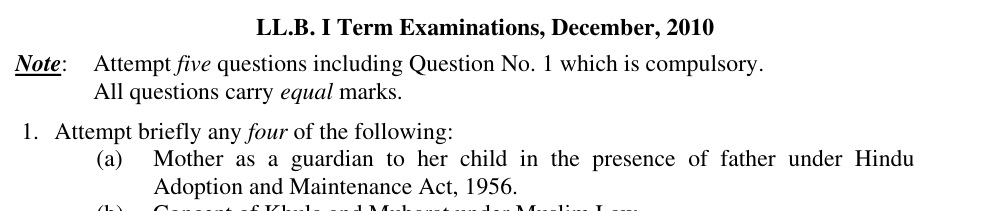
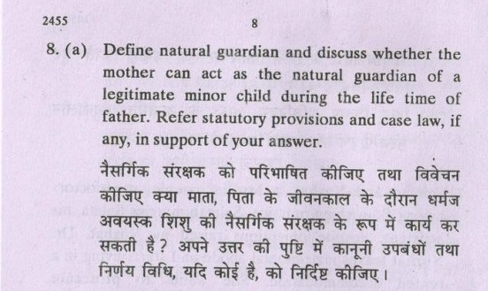
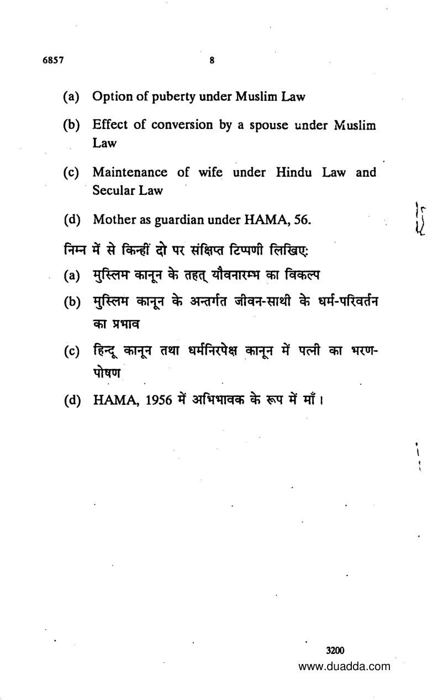
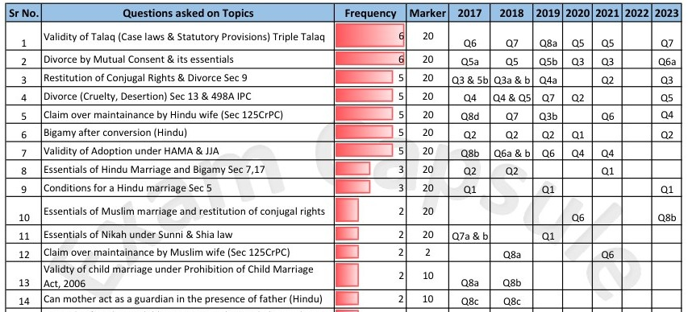

Under HMGA section 4(a), who is a minor?
Not completed eighteen.Minority is a statutory age status, not a test of marriage, income or educational dependence.
Minority and guardianship under Hindu law. Every statutory provision, a deeply annotated DU case study, and source-traced examination answers—organised for serious, systematic study.
Learn who may act, what they may do, and why the child’s welfare remains central. The complete DU extract anchors the case analysis and its examination use.
Original wording, archive labels and capsule-only references remain distinct. Printed statute-name errors are identified—not copied as law. Inspect the evidence →
The DU source map, full-section coverage, the two-opinion case structure and the limits of recovered exam evidence.
This study edition follows Unit V: Minority and Guardianship under Hindu Law in your uploaded University of Delhi LB–105, Family Law–I material. The principal enactment is the Hindu Minority and Guardianship Act, 1956—abbreviated here as HMGA. The prescribed decision is Githa Hariharan v. Reserve Bank of India, (1999) 2 SCC 228.
The guide uses the uploaded four-page HMGA bare Act and the complete twelve-page DU case extract as its primary sources. Unlike a short case digest, it explains both sets of judicial reasons, the two connected petitions, the parties' recorded positions, the actual orders and the limits of the principles stated. Connected provisions of the Guardians and Wards Act are identified as statutory supplements, not falsely described as additional pages of the DU judgment. DU23 · primary · Unit V syllabus, PDF p.4; Githa extract, PDF pp.219–230 HMGA · upload · complete uploaded Act
Who has authority? is different from what that person may lawfully do. Githa recognises the mother's ability to act as natural guardian during the father's lifetime in the circumstances explained by the Court. It does not give either parent unrestricted power to sell a child's property, decide custody solely by personal preference, or ignore the child's welfare.
| Component | Coverage in this edition |
|---|---|
| HMGA sections 1–5 | Extent and domicile, relationship with GWA, application, definitions and overriding effect |
| Sections 6–7 | Every natural-guardian category, the under-five custody proviso, disqualifications, step-parents and adopted children |
| Section 8 | All six subsections: powers, personal-covenant prohibition, immovable-property restrictions, lease tests, voidability, permission standard, procedure, appeals and territorial jurisdiction |
| Section 9 | Every testamentary-guardian provision, parental priority, revival, restrictions and cessation |
| Sections 10–12 | Minor guardians, de facto management, undivided joint-family interests and the High Court reservation |
| Section 13 | Welfare as the paramount consideration and its practical application |
| Githa Hariharan | Detailed facts, prayers, both sides' recorded positions, two opinions, precedents, interpretation, disposition, prospectivity and critical evaluation |
| Connected procedure | Relevant GWA provisions, court supervision, custody, property protection, Family Court jurisdiction and HMA section 26 |
| DU examination material | Nine readable source-traced questions, two shared detailed model answers with paper-specific guidance, and separately labelled authored practice |
| Visual learning | Decision trees, comparisons, timelines, an educational lease-rule explorer and active-recall questions |
This is an independent academic study edition, not an official DU publication. “Comprehensive” refers to the prescribed HMGA unit and its necessary legal connections—not a claim to reproduce every procedural rule or every later custody decision ever delivered.
| Uploaded source | Pinpoint | Role |
|---|---|---|
| DU Family Law–I, 2023 | Unit V syllabus: PDF p.4 | Prescribed topic and case |
| Githa Hariharan extract | Printed pp.211–222 / PDF pp.219–230 | Primary account of the litigation and both judicial opinions |
| HMGA bare Act | PDF p.2: sections 1–4 partly; p.3: sections 4–8(4); p.4: sections 8(5)–13 | Controlling statutory wording for the core notes |
| HMA bare Act | Section 26: PDF pp.12–13 | Custody, maintenance and education during matrimonial proceedings and after decree |
| HAMA bare Act | Sections 12–14: PDF pp.5–6 | Adoptive family status and step-parent distinctions where relevant |
| Child Marriage Act | Connected provisions in the uploaded Act | Prevents treating HMGA's married-girl wording as a licence for child marriage |
| Uploaded Lexis text | Guardianship/custody chapter, especially PDF pp.374–377 and 380 onwards | Secondary explanation and critical perspectives, checked against the statutes and DU judgment |
| PYQ capsule | Family Law table, PDF p.5, row 14 | Topic/year/question-number metadata, not original wording |
For the DU case, printed page + 8 = PDF page. Thus printed p.215 is PDF p.223. The official Supreme Court Reports version is used only to confirm the bench/date and clarify a curtailed precedent passage, with that supplementary use made explicit. DU23 · primary · printed pp.211–222 Official SCR · verification · caption and Anand CJI's Panni Lal discussion
First: HMGA is not HAMA. HMGA concerns minority and guardianship. HAMA concerns adoption and maintenance. Some recovered questions misname the guardianship statute as HAMA; the original wording is preserved with a correction. Do not carry that misdescription into the law you state.
Second: “after him” does not mean only “after his death”. Githa reads it as “in the absence of”, including functional absence from care, not merely physical non-existence. However, do not replace that holding with an unsupported claim that every parental disagreement has been resolved by an unrestricted either-parent rule. DU23 · primary · ¶¶10, 16, 43–47
Third: custody is not the entirety of guardianship. A child's ordinary residence and day-to-day care, legal authority, property management and representation are related but distinct. The under-five proviso concerns custody; it does not turn a child's fifth birthday into an automatic transfer of possession to the father.
Fourth: not every defective transaction has the same legal consequence. A natural guardian's disposal in breach of section 8 is voidable under subsection (3). A purported transfer merely by a de facto manager raises section 11 and the distinct rule explained in the identified supplemental authority. Classification must precede conclusions about remedies and limitation. HMGA · upload · sections 8, 11 Madhegowda · supplement · section 11 analysis
The DU volume prints Anand CJI's reasons first, paragraphs 1–21, followed by Banerjee J.'s reasons, numbered 22–50 in that extract. Some paragraph numbers are omitted in the selection. The official SCR report orders the opinions differently and uses its own numbering. Unless expressly stated otherwise, this guide's references such as “DU ¶10” or “DU ¶46” follow the uploaded DU extract.
The two opinions agree in the result. They are not presented as a majority and dissent merely because their emphasis differs. Where the companion father's detailed oral submissions are not recorded, none are invented; his custody prayer and asserted exclusive authority are distinguished from the mother's allegations about his conduct.
The available corpus yields nine readable guardianship questions, predominantly asking whether a mother may be natural guardian while the father is alive. Official DU reprints, an official 2015 scan, mirrored reprints and repository-labelled scans have different levels of provenance, which remain visible.
The uploaded capsule separately records 2017 Q8(c) and 2018 Q8(c) on this topic. It does not supply their original wording. In the undated paper catalogued as 2017 elsewhere, guardianship is Q8(d), while Q8(c) concerns maintenance. This discrepancy is preserved rather than resolved by guessing. A shared model answer is not passed off as the missing verbatim 2018 question. Capsule · metadata · row 14, PDF p.5 Scan6857 · year unverified · paper 6857, pp.7–8
Separate parentage, guardianship, custody, property and limited representation before solving a problem.
Under HMGA section 4(a), a minor is a person who has not completed eighteen years. A child may be articulate, financially knowledgeable or close to adulthood without thereby ceasing to be a minor under this definition. Conversely, a person does not remain a minor under HMGA merely because of disability or a continuing need for support after eighteen; any adult-support framework requires its own legal basis.
The age of majority is not interchangeable with every other legal age. Marriage, adoption, criminal responsibility and other subjects have their own provisions. The Majority Act itself contains specified savings concerning marriage, dower, divorce and adoption. Do not infer, for example, that marriage makes a seventeen-year-old an adult for managing another minor's property. HMGA · upload · sections 4(a), 10 Majority Act · selected text · sections 2–3, selected text
Section 4(b) defines a guardian by the care of the minor's person, property, or both, and includes the four specified legal categories. Guardianship creates responsibilities and a legally regulated authority; it does not make the minor's body, choices or assets the guardian's property.
The DU judgment describes guardianship as a sacred trust and treats the child's welfare as its organising purpose. The natural parent's status is therefore neither a licence to act whimsically nor a benefit independent of duties. GWA section 20 reinforces the fiduciary character of the relationship. DU23 · primary · ¶¶32–35, 43 HMGA · upload · sections 4, 8, 13 GWA · statutory supplement · section 20
| Concept | Main question | Example |
|---|---|---|
| Parentage | Who is legally the child's parent? | Biological or lawfully adoptive parenthood |
| Guardianship of the person | Who has legally recognised responsibility concerning the child's person? | Decisions relating to care, health or education, within legal limits |
| Physical custody | With whom should the child live or be placed? | A welfare-based residential arrangement in a dispute |
| Guardianship of property | Who may administer the minor's estate and on what terms? | Managing investments or seeking permission to sell land |
| Limited representation | What authority exists for a particular proceeding or task? | Representation in litigation or authority to undertake a specific administrative act |
One person may hold several roles, but the roles are not synonyms. A caregiver's possession of a child does not by itself authorise selling the child's house. A legal guardian's status does not by itself prove that immediate physical custody with that person serves welfare. A court's limited procedural appointment should be read for its actual scope, not treated as unlimited authority over every asset.
Githa's first petition concerned recognition of the mother for an investment, not a contest about transferring custody away from the father. Its companion petition concerned an actual dispute over custody and guardianship, which remained for the District Court to decide. That distinction is fundamental to the judgment. DU23 · primary · ¶¶2–8, 17–20
The four categories in section 4(b) are:
“Natural” does not mean that no legal conditions apply. “Testamentary” does not mean a parent can evade the surviving mother's statutory position. “Court-appointed” does not mean the guardian has ownership of the estate. Each source of authority must be read with the Act and welfare. HMGA · upload · section 4(b), sections 6–13
A de jure guardian has legal authority. A de facto manager/caregiver has taken charge in fact without the legal status required for the act in question. The judgment surveys that historical distinction, and HMGA section 11 denies a property-dealing power based merely on de facto guardianship.
Do not describe a mother who qualifies under Githa as merely a de facto guardian simply because the father is alive. Her authority is that of a recognised natural guardian, established through the statutory interpretation. Conversely, an aunt or friend does not acquire equivalent authority merely by providing affectionate care.
The distinction is crucial in a property problem: an unauthorised act by a true natural guardian and a purported disposal by someone with no relevant guardian authority do not necessarily attract the same rule of invalidity. DU23 · primary · ¶¶10, 16, 33 HMGA · upload · sections 8(3), 11
Before applying section 8, classify the property:
A share inherited by two siblings is not automatically the same thing as an undivided interest in a Hindu joint family. The word “family” alone does not determine the property regime. Sections 6, 8 and 12 must be read together. A parent acting as natural guardian of a separate estate is not in the same statutory position as a competent manager dealing with joint-family property. HMGA · upload · sections 6, 8, 12 Sri Narayan Bal · supplement · combined reading of sections 6, 8 and 12 Madhegowda · supplement · separate inherited-share distinction
| Expression | Main location | Function |
|---|---|---|
| Welfare paramount | HMGA section 13; GWA section 17; Githa | Controls guardianship/custody evaluation and entitlement |
| Necessary or reasonable and proper for benefit | HMGA section 8(1) | Defines the natural guardian's legitimate field of action |
| Necessity or evident advantage | HMGA section 8(4); GWA section 31 | Standard for granting permission for restricted property acts |
| Ordinary prudence | GWA section 27 | Standard of estate management by the property guardian |
| Fiduciary responsibility | GWA section 20 and supervisory scheme | Limits self-interest and requires loyalty/accountability |
A broad claim that a transaction was “for welfare” does not erase a specific requirement of previous court permission. Equally, a formally authorised guardian may be denied custody where that placement would not serve the child. The legal tests operate together; one slogan cannot replace them all.
Mother signs an investment application; both parents agree. Must RBI still insist on the father's signature or a guardianship certificate merely because he is alive?
Parents dispute custody and decision-making. Which arrangement serves the child, on evidence, rather than on an asserted absolute paternal entitlement?
The first track explains why the interpretation of “after him” matters outside court. The second shows why that phrase cannot displace the court's welfare inquiry. A model answer which discusses only parental rivalry misses the actual RBI facts. DU23 · primary · ¶¶7–10, 17–20
HMGA amends and codifies certain parts of Hindu minority and guardianship law. Under section 2, it is additional to GWA and not, except as expressly provided, in derogation of it. GWA supplies important appointment, procedural, supervisory and remedial machinery.
Accordingly, neither of these propositions is accurate: “HMGA repealed GWA for Hindus”, or “GWA makes the special HMGA restrictions irrelevant”. Section 8(5) itself expressly borrows GWA machinery for permission applications. The relationship is one of coordinated operation, with specific statutory provisions controlling their own subject. HMGA · upload · sections 2, 8(5) DU23 · primary · ¶34
Extent, domicile, application, definitions, exclusions and the relationship with the Guardians and Wards Act.
The Hindu Minority and Guardianship Act, 1956, Act 32 of 1956, is dated 25 August 1956. Its purpose is to amend and codify certain parts of the law among Hindus. Its thirteen sections form a connected structure, not thirteen unrelated definitions.
| Section | Subject | The question it answers |
|---|---|---|
| 1 | Short title and extent | Where and to which domiciled persons does the enactment extend? |
| 2 | Supplemental to GWA | How does this special enactment interact with the general guardianship machinery? |
| 3 | Application | Who falls within the statutory Hindu class, and who is excluded? |
| 4 | Definitions | What are minority, guardian and natural guardian? |
| 5 | Overriding effect | Which pre-existing inconsistent rules yield to the codification? |
| 6 | Natural guardians | Which statutory relationships supply authority, subject to interpretation and welfare? |
| 7 | Adopted son | How does natural guardianship pass on adoption in the express provision? |
| 8 | Natural guardian's powers | What may the guardian do, and what requires permission? |
| 9 | Testamentary guardians | Who may appoint, when does the appointment operate, and what are its limits? |
| 10 | Minor as property guardian | Why does a minor lack capacity to act as another minor's property guardian? |
| 11 | De facto property dealings | Why does factual management alone not confer disposal power? |
| 12 | Joint-family interest | When is a separate guardian for an undivided interest unnecessary/prohibited? |
| 13 | Paramount welfare | Why is statutory status never an absolute entitlement contrary to the child's interests? |
HMGA · upload · complete Act, PDF pp.1–4
The uploaded amended text extends to the whole of India and also applies to Hindus domiciled in the territories to which the Act extends who are outside those territories. Its footnote records removal of the former Jammu and Kashmir exclusion from 31 October 2019.
Three concepts must not be confused:
The extension to domiciled Hindus abroad does not itself confer unlimited territorial jurisdiction on every Indian court. A proceeding must still be brought before the forum with the jurisdiction provided by the applicable law—for example, the minor's ordinary residence under GWA section 9 in a person-guardianship case, or property situs under HMGA section 8(6) for the particular permission application. HMGA · upload · section 1 and footnote, PDF p.2; section 8(6) GWA · statutory supplement · section 9
The Act is in addition to and, save as expressly provided, not in derogation of the Guardians and Wards Act, 1890. Thus the special law supplies natural/testamentary-guardian rules, substantive limitations and welfare control, while the general statute supplies relevant court machinery and supervision.
Section 8(5) is the clearest working example: a natural guardian's permission application is processed as though it were an application under GWA section 29, with specified section 31 procedures. The presence of this express bridge disproves the idea that the 1890 Act ceased to matter after 1956. HMGA · upload · sections 2, 8(5) DU23 · primary · ¶34
Clause (a) includes a Hindu by religion in any form or development, expressly including Virashaivas, Lingayats, and followers of the Brahmo, Prarthana or Arya Samaj.
Clause (b) includes a Buddhist, Jain or Sikh by religion.
Clause (c) covers the specified residual class of persons domiciled in the relevant territories who are not Muslim, Christian, Parsi or Jew, unless it is proved that they would not have been governed by Hindu law or a relevant custom/usage on the covered matters if the Act had not been enacted.
The residual clause is qualified. It is not an invitation to apply Hindu guardianship rules universally to every person found in India. Equally, a Sikh or Buddhist is not excluded merely because the person does not use the religious label Hindu. HMGA · upload · section 3(1), PDF p.2
The Explanation includes:
The child's status and upbringing must be examined on the facts. The one-parent rule is not simply a rule that the father's religion always controls. Nor does birth outside marriage by itself exclude the child from the Act.
Do not import HAMA's distinct abandoned-child Explanation into HMGA's text. These are related statutes but their section numbers and words are not interchangeable. Where parentage or upbringing is uncertain, identify the actual HMGA application issue and the relevant general child-protection law rather than inventing a provision. HMGA · upload · Explanation to section 3(1)
Scheduled Tribes: section 3(2), notwithstanding subsection (1), excludes members of a Scheduled Tribe within Article 366(25), unless the Central Government directs otherwise by Gazette notification. Practice of a Hindu ceremony alone should not be treated as proof that this express exclusion has disappeared.
Pondicherry Renoncants: the uploaded text includes section 3(2A), excluding Renoncants of the Union Territory of Pondicherry, with its amendment footnote. This is a specific category, not a claim that every resident of that territory is excluded.
Inclusive meaning of Hindu: under section 3(3), “Hindu” in the Act includes those persons to whom the section makes the Act applicable even though not Hindu by religion in a narrower sense. HMGA · upload · sections 3(2), (2A), (3), PDF p.2
A minor is a person who has not completed eighteen years. The statutory formulation avoids vague tests based on maturity, earning ability or marital status. A seventeen-year-old parent remains a minor for section 10's property-guardian prohibition.
The connected GWA definition refers to the Majority Act, whose amended section 3 states completion of eighteen for persons domiciled in India and supplies the birthday-computation rule. Older age-of-majority descriptions should not be automatically substituted for HMGA's express definition. The source consulted for Majority Act sections 2–3 is clearly identified as a supplementary statutory reproduction. HMGA · upload · sections 4(a), 10 GWA · statutory supplement · section 4(1) Majority Act · selected text · sections 2–3
“Guardian” means a person having care of the person, property, or both of a minor, and includes the four categories set out in the previous chapter. “Natural guardian” is defined as any of the guardians mentioned in section 6.
Githa makes interpretive use of these definitions: the mother is already within the statute's recognised natural-guardian category. The expression “after him” is therefore not read in isolation as eliminating her legal existence as a guardian throughout the father's life. But the inclusive definition is not an independent power for every factual caretaker to dispose of property: section 11 specifically controls that attempt. HMGA · upload · section 4, PDF pp.2–3 DU23 · primary · ¶¶7, 10, 38–44
Save as otherwise expressly provided:
The provision is not an instruction to discard every connected statute. It begins with an express qualification and must be read with section 2. Nor does its temporal reference automatically defeat every later enactment or constitutional requirement.
Historical descriptions of de facto managers' powers, or assumptions of unrestricted paternal dominion, cannot simply be used to override the enacted sections 8, 11 and 13. The applicable date and the nature of the right asserted matter. HMGA · upload · section 5, PDF p.3 DU23 · primary · ¶¶32–36
An effective examination answer reads these provisions together. Definitions do not erase restrictions; restrictions do not erase the recognised mother; and parental status does not displace welfare.
Father and mother, the under-five proviso, non-marital children, married girls, adoption and step-parents.
Section 6 identifies natural guardians concerning both the minor's person and property, but expressly excludes the minor's undivided interest in joint-family property. That exclusion is important before any sale or lease problem is analysed. Section 12 deals with the particular managed joint-family situation.
The three clauses then distinguish a boy/unmarried girl, the specified child born outside marriage, and a married girl. They must be read with the provisos, the exclusion of step-parents, Githa's interpretation and section 13 welfare control. HMGA · upload · section 6, PDF p.3
For a boy or unmarried girl, the text says “the father, and after him, the mother”. The law after Githa is not that the mother must wait for the father's death in every case.
The Court reads “after” as “in the absence of”—absence from actual care of the child's person or property in the circumstances explained in the judgment. Examples include indifference, a mutual arrangement placing the mother in charge, or inability associated with being away or physical/mental incapacity. The next chapter develops the precise test.
The mother does not need to obtain a court appointment merely to become a natural guardian where the statute, so construed, already recognises her authority. That proposition does not remove a separate need for court permission for a restricted property act. DU23 · primary · ¶¶7–10, 16–19 HMGA · upload · sections 6, 8
The proviso says that custody of a minor who has not completed five years shall ordinarily be with the mother.
Every word has work to do:
The child's fifth birthday does not automatically require delivery to the father. After the age proviso ceases to be directly applicable, welfare and the rest of the statutory framework remain. Before five, facts showing that maternal custody would harm the child cannot simply be ignored. HMGA · upload · section 6(a) proviso; section 13 DU23 · primary · ¶¶7–8, 35
For an illegitimate boy or illegitimate unmarried girl, in the statute's terminology, the order is “the mother, and after her, the father”. Do not write the father's order from clause (a) into clause (b).
The statutory terminology describes a legal birth category, not diminished human worth. The child remains entitled to care and protection. A father cannot answer the provision merely by asserting biological paternity and ignoring its different order.
Githa's formal challenge and operative construction concerned section 6(a) and then section 19(b) GWA. Its welfare and constitutional reasoning is relevant to understanding the scheme, but do not falsely say that the Court separately rewrote every word of section 6(b) or decided every dispute involving such a child. HMGA · upload · section 6(b) DU23 · primary · ¶¶5–10, 15–16
The uploaded text lists the husband as natural guardian in the case of a married girl. This provision must not be used as a one-line answer authorising a child marriage or forced delivery of a minor bride to a claimant.
In particular:
A complete answer states the statutory text and these limits. Neither silently deleting the clause nor enforcing it without regard to the child's protection is adequate. HMGA · upload · sections 4(a), 6(c), 10, 13 PCMA · upload · sections 3, 12–14 GWA · statutory supplement · sections 12(3)(a), 19
No person is entitled to act as natural guardian under this section if that person:
A mere family disagreement, temporary absence or a religious practice is not automatically complete and final renunciation. Nor is the Act's religious-disentitlement wording a reason to assume that every question of physical custody under every law has already been conclusively resolved. The proper route, statutory status and welfare must be examined.
Distinguish these express statutory disentitlements from functional absence under Githa. A father can be absent from care through indifference or incapacity without proof that he converted or renounced the world. The mother's authority in that setting does not depend on inventing one of these proviso facts. HMGA · upload · section 6 proviso DU23 · primary · ¶¶10, 16
The Explanation states that these expressions do not include a stepfather or stepmother. Accordingly, marriage to a child's parent does not by itself confer natural guardianship under section 6.
This does not mean a step-parent can never provide care or never be considered under a lawful court process. It means the particular natural-guardian status is not automatic. Any separate appointment or custody claim must satisfy the applicable law and welfare requirements.
Likewise, remarriage of the biological parent does not automatically erase that parent's relationship to the child. A step-parent's status and the biological parent's continuing status are separate questions. HMGA · upload · section 6 Explanation; section 13
The text provides that natural guardianship of an adopted son who is a minor passes on adoption to the adoptive father and after him the adoptive mother.
The provision presupposes a legally effective adoption. Merely living with relatives, changing a school record or calling a child an adopted son does not dispense with the adoption law which creates that status. The source of parentage and the source of guardian authority must be kept distinct.
The section expressly uses “adopted son”. Do not quote it as if Parliament wrote “every adopted child”, but equally do not infer that a lawfully adopted daughter can have no guardian. HAMA section 12 creates adoptive family status for the adopted child, and the relevant HMGA provisions must then be applied. The precise route and parentage matter. HMGA · upload · section 7 HAMA · upload · section 12, PDF p.5
HAMA section 14 distinguishes a spouse existing at adoption from a person married later in the situations it describes. For example, where a bachelor first adopts a child and later marries, his subsequently married wife is the adopted child's stepmother under that provision.
Therefore, the fact that section 7 refers to an adoptive mother does not allow every later wife to claim that title. Identify who actually has legal adoptive-parent status before deciding who benefits from the guardianship provision. A later step-parent does not obtain natural authority by changing the vocabulary.
Githa's reading of the same “after” idea is important to the broader statutory approach, but its formal holding concerned section 6(a) and GWA 19(b). It did not strike down section 7 or adjudicate a disputed adoption in the RBI case. HAMA · upload · section 14, PDF p.6 HMGA · upload · sections 6–7 DU23 · primary · ¶¶5, 10, 15
| Situation | Starting provision | Qualification which must accompany it |
|---|---|---|
| Boy / unmarried girl | Father and after him mother | “After” as functional absence under Githa; welfare remains controlling |
| Child under five | Custody ordinarily with mother | Not an absolute welfare override; not automatic father-custody at five |
| Specified non-marital boy / unmarried girl | Mother and after her father | Different statutory ordering; no lesser dignity for the child |
| Married girl | Husband in the text | Child-marriage law, section 13 and minority/property incapacity cannot be ignored |
| Adopted minor son | Adoptive father and after him adoptive mother | Valid adoption and correct parental status required |
| Step-parent | Not included as father/mother | No automatic natural guardianship merely by remarriage |
| Person ceasing Hindu / finally renouncing | Disentitled under proviso | Establish the relevant fact; distinguish other custody or legal routes |
| Minor's undivided joint-family interest | Excluded from section 6's property field | Apply section 12 and the management facts |
The exact meaning of functional absence, agreement, actual care and the limits of the saving interpretation.
Can a mother act as the natural guardian of her legitimate minor child during the lifetime of the father? The answer is yes in the circumstances recognised in Githa Hariharan, but it requires explanation. It is not enough to quote section 6(a) literally, and it is not accurate to say that the Court simply deleted every statutory qualification.
The correct chain is section 4(b)–(c) → section 6(a) → constitutional equality → functional absence → welfare → scope of the particular act. The prescribed judgment develops each link. DU23 · primary · ¶¶7–10, 16, 38–47
Read alone, “the father, and after him, the mother” can suggest that the mother is recognised only after the father's lifetime. RBI took that position when it rejected the mother's signature in the Relief Bonds application.
The Court held that such an interpretation would offend gender equality, a basic constitutional principle. HMGA was enacted in 1956 after the Constitution; Parliament is presumed to legislate consistently with constitutional limits. If the statutory words admit a constitutional meaning, that meaning is preferred to an interpretation requiring invalidation.
The technique is a constitutionally compatible construction, often described as reading down or harmonious construction. The Court did not declare section 6(a) void or replace the Act with a newly drafted equality code. DU23 · primary · ¶¶3, 5, 9–10, 43–47
The Court's central explanation is that “after” can mean “in the absence of”. The relevant absence concerns the father's actual involvement in the care of the minor's person or property, not simply whether he is alive.
The mother is already a natural guardian recognised by sections 4 and 6. Once the relevant functional situation is established, she can act in that legal capacity during his lifetime. She is not transformed into a stranger who must invariably obtain a separate certificate of guardianship.
The judgment's language is contextual. It refers to the father's absence from the relevant affairs “for any reason whatever” and supplies illustrations. That breadth should be read with its focus on actual care and the child's welfare, not as permission for a parent to manufacture an absence whenever the parents disagree. DU23 · primary · ¶¶10, 16, 46
| Situation in the DU judgment | What makes it legally relevant | What should not be assumed |
|---|---|---|
| Wholly indifferent father | He does not actually take responsibility for the minor's affairs | Living in the same house necessarily means active care |
| Mutual arrangement | Parents place the mother in charge; the judgment recognises oral or written agreement | Only a notarised agreement can ever suffice, or agreement is the sole possible route |
| Staying away and unable to care | The father's location is connected with inability to attend to the child or estate | Every overseas or travelling father is automatically removed from guardianship |
| Physical or mental incapacity | He cannot in fact take the relevant care | A particular diagnosis invariably disqualifies every parent or a declaration under a different statute is automatically required |
In the actual RBI matter, the joint letter evidencing agreement was important. In the companion matter, the mother alleged apathy, but the contested welfare facts were left for the District Court. These were different evidentiary settings. DU23 · primary · ¶¶2, 4, 10, 16–20, 26–29
Githa does not hold that a mother must always obtain the father's permission before every act as natural guardian. A mutual arrangement was one recognised factual pathway, especially important in the bank case. Indifference and inability are other pathways.
Do not import HAMA section 8's husband-consent rule for adoption into HMGA section 6's natural guardianship. The two Acts address different transactions. Likewise, the judgment's examples of physical/mental incapacity must not be replaced with a court-declaration condition borrowed from adoption law.
What matters is evidence of the legally relevant circumstances and compliance with the powers/limits applicable to the particular act. A court may need to resolve a factual dispute, but the mother's natural status is not always created only by a judicial appointment. DU23 · primary · ¶¶10, 16–17 HMGA · upload · sections 4, 6, 8
Anand CJI distinguished two situations. In a court dispute over custody/guardianship, the child's welfare in its widest sense is central; paternal priority cannot mechanically determine the result. Outside court, an institution may reject a mother's otherwise valid act solely because the father lives. The interpretation of “after” is particularly important in that second setting.
RBI was not entitled to insist on the father's signature or a guardianship certificate simply on the lifetime-only premise, especially where both parents had written their agreement. The Court said the mother's application ought to be accepted and called for suitable institutional methodology.
That result is not a court award of exclusive permanent custody to every mother. The companion custody dispute was not decided in the mother's favour by the Supreme Court; it remained for the District Court under the stated principles. DU23 · primary · ¶¶7–8, 17–20
This distinction prevents a common error in property answers. Section 11 prohibits dealing with a minor's property merely as a de facto guardian. A mother who has natural-guardian authority under the statute as interpreted is not automatically within that prohibited class simply because the father is living.
However, her recognition as natural guardian does not make every act lawful. She is subject to section 8 in the same way as another natural guardian: necessary/proper benefit, no personal covenant, and previous permission for the specified immovable-property dealings. Equality in status does not mean exemption from protection of the child's estate. DU23 · primary · ¶¶10, 16 HMGA · upload · sections 8, 11
The language in DU paragraph 16 answers the objection that the mother's actions fail because the father is alive and therefore she cannot be natural guardian. It must not be detached from the statute and converted into universal approval of her transactions.
A bank investment of the child's money and a sale of the child's land are not subject to identical controls. Even where maternal authority is established, a restricted land sale must satisfy section 8's benefit and permission requirements. Conversely, an institution should not demand a land-sale permission order for a routine act simply because it is confused about who the guardian is.
The proper sequence is:
Jijabai Vithalrao Gajre involved a father who had long ceased taking interest while the mother managed the daughter's affairs. The mother could be treated as natural guardian in those circumstances. The case is not authority that a separation must last twenty years before a mother can act.
Panni Lal involved a mother's sale of a minor's property, a father who attested the deed, absence of proof of the required necessity/benefit and lack of court permission. The deed's attestation did not simply turn it into a valid sale by the father. The official report clarifies that even a sale by the father on those defective facts could have been annulled for want of permission. Githa therefore distinguished that property-protection context rather than abolishing section 8.
The DU extract curtails part of that discussion; the official SCR clarification is labelled as such. It supports, rather than replaces, the primary DU account. DU23 · primary · ¶¶11–12, 35, 41–42 Official SCR · verification · Anand CJI's ¶¶12–13, PDF pp.24–26
At the time of Githa, the disputed GWA provision referred to a living, fit father. The Court directed that it be construed consistently with its section 6(a) interpretation.
The Personal Laws (Amendment) Act, 2010 later substituted a clause referring to a minor other than a married female whose father or mother is living and is not, in the court's opinion, unfit to be guardian of the person. This is a separate legislative development. Do not say that Githa itself inserted those statutory words in 1999, or that the 2010 Act rewrote HMGA section 6(a).
The person/property distinction also matters: the fit-parent restriction in section 19(b) expressly concerns guardianship of the person. The opening Court-of-Wards property restriction is a different part of section 19. DU23 · primary · ¶15 2010 amendment · §2 · section 2 GWA · statutory supplement · section 19
The judgment should not be reduced to a rule that whichever parent signs first always has a superior right. Its factual pathways concern functional absence and mutual arrangements, and its broader constitutional language recognises the responsibility of both parents.
Where a dispute reaches court, the statute and welfare must guide the decision. The child's interests, not the father's claimed dominance or the mother's status alone, determine the appropriate arrangement. The uploaded secondary text raises a legitimate critical question about whether the retained wording gives complete, express equality in all circumstances. That is critical evaluation, not a reason to deny the maternal authority which Githa actually recognises. DU23 · primary · ¶¶8, 16, 43–47 Lexis · secondary · PDF pp.376–377
Ordinary management, personal covenants, restricted disposals, both lease limbs, voidability and limitation.
Section 8(1) empowers a natural guardian to do acts which are necessary or reasonable and proper for the benefit of the minor, or for the realisation, protection or benefit of the minor's estate, subject to the section. It ends with a firm restriction: the guardian can in no case bind the minor by a personal covenant.
The section is not merely a list of forbidden transactions. It enables responsible management while protecting the child's person and property against misuse. The actor must actually be the natural guardian, the property must fall within the relevant statutory field, and the proposed act must serve the child rather than the guardian's private interests. HMGA · upload · section 8(1), PDF p.3
Section 6 excludes the minor's undivided interest in joint-family property, and section 12 addresses the adult-managed joint-family situation. Section 8 should therefore not be applied mechanically to every asset with a family connection.
For the ordinary section 8 analysis, identify the minor's separate or distinct estate. A house inherited by a child may require a different analysis from an undivided interest in joint-family land managed by its competent adult member. A parent merely calling an asset “family property” does not establish the exception.
This classification is discussed in detail in the joint-family chapter. It is the first question, not an excuse to be invented after a prohibited sale. HMGA · upload · sections 6, 8, 12 Sri Narayan Bal · supplement · section 8 scope
Subject to the law and the actual facts, ordinary management can include preservation of assets, realisation of sums due, appropriate expenditure for the child's needs and protection of the estate. The statutory test is not “whatever the guardian thinks desirable”. It requires a proper connection with the minor's benefit or estate.
Useful evidentiary questions include:
A beneficial purpose does not by itself remove subsection (2). A restricted transaction requires both substantive justification and the required procedure.
A guardian cannot impose a personal covenant on the minor. For example, a purported personal undertaking by the child to repay the guardian's debt or perform a personal obligation cannot be justified simply because a guardian signed on the child's behalf.
Distinguish a legally permitted act concerning the child's estate from an unrestricted personal promise. The section does not say that every act done through a guardian is ineffective; it says that the guardian's power is bounded and cannot create that prohibited personal obligation.
Nor does court permission for a particular property transaction automatically authorise a different personal covenant forbidden by subsection (1). Read the actual terms and the statutory restriction. HMGA · upload · section 8(1)
Without previous permission of the court, the natural guardian shall not:
The restriction applies to any part of the minor's immovable property in its relevant field. A sale of only a small share is not outside the clause merely because most of the property remains.
“Previous” matters. A relative's consent, a notarial declaration, a registered deed or the family's approval is not the prior judicial permission which the section requires. The transaction's label cannot eliminate its substance: calling a disposal a family arrangement does not automatically answer whether the statutory restriction applies.
Subsection (2)(a) is specifically about immovable property. It does not impose the same prior-permission rule on every routine transaction involving money or other movables. Those acts still require lawful authority and compliance with subsection (1). This helps explain why the RBI dispute about recognising a mother for an investment was not itself a land-sale permission application.
The section covers gifts; it does not authorise a guardian to give the minor's land away for the guardian's personal generosity. A proposed gift must meet the applicable permission and benefit standards, not an assumed exemption. HMGA · upload · section 8(2)(a)
Previous permission is required for a lease of the relevant immovable property:
The word or is decisive. Either trigger is enough. A lease shorter than five years can still require permission if it runs too far beyond majority. A lease ending before majority can still require permission because its total term exceeds five years.
The threshold is not “five years or more”, and the second test is not “any period after majority”. Exactly five years does not by itself trigger the first limb; ending exactly one year after majority does not by itself trigger the second. Other legal requirements remain. HMGA · upload · section 8(2)(b)
For these examples, assume the child is exactly the stated age, the lease begins then, majority is eighteen, and the actor is a natural guardian of the child's separate immovable property.
| Child's age | Lease term | First limb: term exceeds 5? | Second limb: ends later than age 19? | Section 8(2)(b) result |
|---|---|---|---|---|
| 10 | 6 years | Yes | No: ends at 16 | Permission required under first limb |
| 13 | 5 years | No | No: ends at 18 | Neither duration trigger is met |
| 14 | 5 years | No | No: ends at 19 | Neither duration trigger is met |
| 15 | 5 years | No | Yes: ends at 20 | Permission required under second limb |
| 17 | 2 years | No | No: ends at 19 | Neither duration trigger is met |
| 17 | 3 years | No | Yes: ends at 20 | Permission required under second limb |
“Neither duration trigger” does not mean the lease is conclusively valid. It still must comply with section 8(1), the actor's authority, the nature of the property and any other applicable restrictions. For an actual dated lease, compute the real dates rather than rounded ages.
This is an educational check of the duration condition only, using exact whole-year hypothetical ages. It is not a legal opinion on a real lease or a substitute for checking birth dates, lease terms and the relevant authority.
Assume exact whole-year ages, a lease starting now, a competent natural guardian and the child’s separate immovable property. Majority is 18. This tests duration only—not the validity of a real transaction.
A five-year lease beginning at exact age fifteen ends at twenty—more than one year after majority.
Even when neither limb is crossed, section 8(1), welfare, authority and other applicable requirements remain. Check real dates separately.
A disposal of immovable property by a natural guardian in contravention of subsection (1) or (2) is voidable at the instance of the minor or any person claiming under the minor.
Important consequences:
The statutory distinction protects the minor without making every transaction by a lawful guardian identical to a stranger's disposal. HMGA · upload · section 8(3)
Under section 8(4) the court cannot grant permission for the subsection (2) acts except in a case of necessity or evident advantage to the minor. The standard concerns the child's interest, not the convenience or enrichment of the guardian.
Evidence may include the purpose of expenditure, the child's actual needs, liabilities and available resources, valuation, the reason for the proposed mode of disposal, and the safeguards proposed for proceeds. No fixed numerical formula in the Act makes a sale necessary merely because a parent wants cash.
The court may refuse even if the guardian is otherwise unquestionably the natural guardian. Identity of the guardian, justification for the transaction and permission are distinct questions. The procedural safeguards under subsection (5) and GWA section 31 reinforce this separation. HMGA · upload · sections 8(4)–(5) GWA · statutory supplement · section 31
Three contrasting situations illustrate the point:
The prescribed Githa discussion of Panni Lal also protects this distinction. Even a father acting as natural guardian could not rely on his status to defeat the necessary statutory safeguards. DU23 · primary · ¶12 Official SCR · verification · Anand CJI's ¶13, PDF p.26 Madhegowda · supplement · section 11 reasoning Sri Narayan Bal · supplement · combined statutory reading
Article 60(a) of the Limitation Act, 1963 prescribes three years from attaining majority for the ward's suit to set aside a guardian's transfer. The Article separately addresses the ward's legal representative if the ward dies within three years after majority or before attaining majority, with different stated starting points.
Do not automatically substitute the twelve-year possession period under Article 65 for an Article 60 challenge to a voidable guardian transaction. Conversely, a truly void transaction raises different questions; Madhegowda concerned a de facto manager and must not be mechanically rewritten as a universal section 8 natural-guardian case.
The proper relief, the legally effective mode of avoidance, possession, ratification, applicable disability/fraud provisions and limitation require analysis of the facts and governing law. The safe examination principle is not to treat “voidable” as permission to ignore a transaction indefinitely, and not to claim that every void transaction creates an unlimited right to recover possession regardless of time. Limitation Act · supplement · Schedule, Articles 60 and 65 Madhegowda · supplement · disposition and repudiation discussion
Proper forum, necessity or evident advantage, GWA safeguards, notice, conditions and refusal appeals.
An application for a natural guardian's permission under HMGA section 8(2) is governed by the Guardians and Wards Act, 1890 as if it were an application for permission under GWA section 29. The incorporation makes the general Act practically important even though the applicant already has natural-guardian status.
Subsection (5) expressly provides that:
The guardian is not necessarily applying to be appointed guardian; the application may instead seek permission for a particular restricted act. That distinction should be clear in both a model answer and a proposed procedural route. HMGA · upload · section 8(5), PDF p.4
For this section, “court” means:
within whose local limits the immovable property concerned is situated. If it lies within more than one such jurisdiction, a competent court where any portion is situated is included.
This is not identical to GWA section 9's ordinary-residence rule for an application concerning guardianship of the child's person. A property-permission application cannot be assigned to any convenient court merely because the parent resides there. Identify the specific proceeding before choosing the forum. HMGA · upload · section 8(6)
HMGA section 8(4) and GWA section 31(1) require necessity or evident advantage to the minor/ward. The two expressions are alternatives, not a requirement to prove both in every case. But an unsupported assertion by the guardian is not a judicial finding.
A useful academic pleading checklist is:
This is a study checklist, not an official prescribed petition form. Actual procedural requirements depend on the applicable statute, rules and court practice. HMGA · upload · section 8 GWA · statutory supplement · sections 29–31
An order granting permission must recite the necessity or advantage, describe the property, and specify conditions the court considers appropriate. It is recorded, dated and signed in the manner provided by the section.
The order is therefore not an abstract certificate stating that the parent is trustworthy. It authorises the particular act concerning particular property on the stated basis and conditions. A guardian should not use permission for one property as authority to sell another, or treat a permission for a specified transaction as unlimited future disposal power. GWA · statutory supplement · section 31(2)
The Act lists examples, without exhausting the court's discretion:
| Possible condition | Protective purpose |
|---|---|
| Sale not completed without court sanction | Retains oversight of final terms and completion |
| Public auction to the highest bidder | Supports transparent price discovery, with the prescribed proclamation, time, place and supervision |
| Lease terms controlled | Court may prohibit a premium or prescribe term, rent and covenants |
| Proceeds paid into court | Prevents disappearance or misuse of the sale/transaction money |
| Investment or disbursement as directed | Connects the released value with the child's protected needs and assets |
The Act does not say that every sale must inevitably use every listed condition. It permits appropriate safeguards. An answer should distinguish available powers from mandatory elements of every order. GWA · statutory supplement · section 31(3)
The court may direct notice to a relative or friend who, in its opinion, should receive notice of the application. It shall hear and record the statement of a person who appears in opposition.
Do not convert this into a rule that any relative has an unconditional veto. Equally, do not ignore a legitimate objection concerning valuation, necessity, fraud or conflict of interest merely because the applicant is the child's parent. The court's inquiry is protective, with the child's interests as the substantive focus. GWA · statutory supplement · section 31(4)
HMGA section 8(5)(c) expressly allows appeal from the order refusing permission. It directs the appeal to the court which ordinarily hears appeals from the deciding court.
This is not a statement that every interim direction or every order granting permission has an identical appeal under this clause. GWA section 47 separately enumerates appealable orders; Family Court orders, where that statutory jurisdiction is involved, have their own framework. Identify the relevant Act, court and order rather than applying one invented universal guardianship appeal rule. HMGA · upload · section 8(5)(c) GWA · statutory supplement · section 47 Family Courts Act · supplement · section 19, general framework
| Application | Principal jurisdictional inquiry | Mistake to avoid |
|---|---|---|
| Natural guardian's permission for restricted immovable-property act | HMGA section 8(6): property situated within the specified court's jurisdiction | Using only the parent's residence |
| Appointment/declaration of guardian of the person | GWA section 9(1): where the minor ordinarily resides; relevant Family Court allocation | Choosing a forum merely because an adult recently travelled there |
| Appointment/declaration of property guardian | GWA section 9(2): minor's ordinary residence or property location; section 9(3) return power | Confusing it with the more specific HMGA permission proceeding |
Family Courts Act section 7(1), Explanation (g), expressly concerns guardianship of the person, custody or access. Do not assume that every separate application to sell a minor's own immovable property automatically falls within that clause merely because the family is involved. HMGA · upload · section 8(6) GWA · statutory supplement · section 9 Family Courts Act · supplement · sections 7–8
A valid permission and sale do not end the guardian's responsibility. Proceeds must be dealt with according to the order and the applicable fiduciary duties. A later misapplication can generate accountability and remedies even though the original permission question was properly addressed.
Conversely, later wrongdoing should not be casually treated as proof that every earlier authorised transaction was automatically void. The defect, actor, timing, property and remedy must be identified. This is the practical importance of the GWA provisions on accounts, court directions and removal. GWA · statutory supplement · sections 20, 27, 33–39
Every subsection: parental power, surviving mother, revival, scope, restrictions and cessation.
Section 9 deals with a guardian appointed by will, not merely with a family member who has agreed informally to help. The section identifies who may make the appointment, when it takes effect, how the surviving mother's position is protected, and what powers the appointee has.
A will can address both property succession and guardianship, but these are different legal functions. Appointing someone to administer a child's property does not necessarily give that person ownership of it. A valid appointment also remains subject to the child's welfare under section 13. HMGA · upload · sections 9, 13
A Hindu father entitled to act as natural guardian of his minor legitimate children may appoint by will a guardian for any of them concerning:
The qualifying words matter. The subsection speaks of an entitled natural guardian, not a father whose statutory entitlement has been excluded. It expressly refers to minor legitimate children; do not silently erase that category or assume identical wording for every other relationship. The section separately gives the mother a power concerning her minor illegitimate children in subsection (4).
A parent's private preference is not self-executing in defiance of the other subsections. The father's appointment must be considered with the surviving mother's position under subsection (2). HMGA · upload · section 9(1), PDF p.4
An appointment by the father under subsection (1) has no effect if he predeceases the mother. It revives if the mother dies without appointing a guardian by will.
This prevents the ordinary operation of the father's will from displacing the surviving mother's statutory position. The rule is not that the father's nominee invariably takes over immediately at his death regardless of the mother.
| Sequence | Section 9(2) consequence |
|---|---|
| Father appoints G; father dies while mother lives | Father's appointment has no effect at that stage |
| Mother later dies without appointing a guardian by will | Father's appointment can revive, subject to the continuing statutory conditions |
| Mother later makes the relevant valid testamentary appointment | The condition for revival of the father's earlier appointment is not satisfied |
| Child has already ceased to be a minor when later events occur | Do not treat the will as creating indefinite guardianship under HMGA |
The appointment and the appointee's entitlement must still comply with the Act, the will's terms and welfare. A valid statutory priority cannot be defeated merely by describing the father's chosen relative as more financially comfortable. HMGA · upload · section 9(2), (5), section 13
Two categories are specified:
She may appoint a guardian of the person, property other than the section 12 undivided interest, or both.
Do not reduce the provision to “only widows may appoint”. It expressly recognises the second category as well. Conversely, do not treat every circumstance in which a mother temporarily attends to a child as proof of all the conditions in subsection (3). The law distinguishes Githa's functional authority in the relevant circumstances from the express conditions governing a testamentary appointment. Identify the statutory entitlement rather than assume it.
The father's disqualification by ceasing to be Hindu or complete/final renunciation is governed by section 6's proviso; welfare-based entitlement must also be considered where relevant. HMGA · upload · sections 6, 9(3), 13
A Hindu mother entitled to act as natural guardian of her minor illegitimate children, in the statute's wording, may appoint by will a guardian of their person, property or both.
The section gives this express power to the mother. It should be read with section 6(b)'s different natural-guardian ordering. A student should not substitute “father first” from section 6(a), nor omit the child's protected status because of birth outside marriage.
The paragraph does not repeat every parenthetical used in subsections (1) and (3). When a joint-family-property issue actually arises, section 12 must still be analysed rather than silently rewriting the text. HMGA · upload · sections 6(b), 9(4), 12
The appointed guardian has a right to act after the death of the appointing father or mother, as the case may be, within the statutory sequence. The guardian exercises the rights of a natural guardian to the extent and subject to the restrictions in the Act and the will.
Two limits follow:
The Hindu statutory grant must therefore be read with section 8's protective framework and the applicable general law. A parent cannot use the will simply to authorise whatever alienation the Act would otherwise prohibit. If the guardian is also appointed/declared under GWA, that statute's relevant provisions and the order require attention. HMGA · upload · section 9(5), section 8 GWA · statutory supplement · sections 28–31
The testamentary guardian's right under the section ceases, where the minor is a girl, on her marriage. This is the statute's express formulation. It does not say that marriage makes a girl major or that the Act authorises a child marriage.
Read it with section 13, the capacity rule in section 10, and the Prohibition of Child Marriage Act. A claimed marriage's legal status, the child's protection and the appropriate guardian/custody route must be examined. Do not infer that a minor husband acquires competence to administer her property despite section 10, or that a court must order cohabitation without a welfare inquiry. HMGA · upload · sections 9(6), 10, 13 PCMA · upload · sections 3, 12–14
Banerjee J. describes guardianship as a trust and distinguishes the guardian's office from a temporary entrustment of custody for education or similar purposes. A living natural guardian cannot merely declare a stranger to be the new natural guardian in substitution for the statutory scheme.
Testamentary appointment is a particular legal route operating in the circumstances section 9 supplies. Court appointment is another. Neither should be confused with employing a tutor, using a care facility or authorising a relative to perform one limited task. DU23 · primary · ¶¶32–34 HMGA · upload · sections 4, 9
Why factual care does not create disposal power, and why void and voidable transactions must be distinguished.
A minor is incompetent to act as guardian of the property of any minor. The rule is categorical within its subject. A family relationship, early marriage, apparent maturity or designation in a private document does not remove it.
The precise scope is important. Section 10 speaks of property, not every imaginable act of physical care. But its silence about a particular person-care arrangement is not a positive grant of universal guardianship capacity to minors. The other statutory requirements, including GWA section 21 and the child's welfare, must be considered separately. HMGA · upload · section 10 GWA · statutory supplement · section 21
A seventeen-year-old who is a parent or is described as a husband does not thereby become eighteen under HMGA. Even where the natural-guardian wording is relevant to a personal relationship, section 10 prevents treating that minor as competent to administer another minor's property.
The old/general GWA language about a minor's own wife or child cannot simply be used to nullify this specific Hindu statutory property restriction. Nor may it be used as an endorsement of child marriage. Apply the distinct provisions and welfare rather than assuming that every legal age or capacity is identical. HMGA · upload · sections 4(a), 6(c), 10, 13 GWA · statutory supplement · section 21 PCMA · upload · sections 2–3, 12–14
After commencement, no person may dispose of or deal with a Hindu minor's property merely on the ground of being the de facto guardian. The target is a claim of legal power based only on having taken charge in fact.
A relative may care deeply for the child, cultivate land, collect money or supervise daily life. Those circumstances are not by themselves the statutory title necessary to alienate the child's estate. The provision protects the property even from a well-intentioned person who lacks authority.
The word merely also prevents an overstatement. The law does not deny that someone may actually provide care. It denies the claimed property-dealing authority based only on that factual role. If the person has a separate valid statutory, testamentary or court-derived authority, that source and its limits must be examined. HMGA · upload · section 11
The mother in Githa is not simply a de facto manager. Sections 4 and 6 recognise her natural-guardian status, and the Court's interpretation explains when she can exercise it during the father's life.
Therefore:
The right inquiry is the legal source of authority, followed by the permitted scope of action. DU23 · primary · ¶¶7–10, 16 HMGA · upload · sections 4, 6, 8, 11
Banerjee J. surveys the older distinction between de jure guardians and de facto guardians/managers. That history explains why the codified statute is significant. It does not justify carrying pre-codification powers into the present in defiance of section 11.
The historical use of a term is not proof that the Act grants the powers associated with that term in every older case. Read the operative enactment and the applicable date. DU23 · primary · ¶¶32–34 HMGA · upload · sections 5, 11
SUPPLEMENT · NOT A SEPARATE DU-PRESCRIBED CASE
Madhegowda (D) by LRs v. Ankegowda (D) by LRs, decided 20 November 2001, reported (2002) 1 SCC 178, supplies a useful direct explanation of section 11. It is distinguished from the primary Githa extract in this edition. Madhegowda · supplement · complete judgment reproduction
Ninge Gowda died leaving daughters Sakamma and Madamma. While Sakamma was a minor, Madamma purported to act as her guardian and sold her share of the inherited property to Madhegowda by a registered deed dated 24 April 1961. The purchaser claimed that money was needed for the minor's marriage.
Sakamma attained majority in approximately 1961–62 and later sold her share to Ankegowda on 1 July 1967. Following a possession dispute, the later purchaser sought declaration, partition and possession. The trial and first appellate courts treated the earlier transaction as merely voidable and relied on the failure to have it annulled within three years of majority.
The High Court reversed that result. The Supreme Court considered whether the elder sister possessed authority to alienate the minor's share and, consequently, whether the earlier transaction had been treated under the wrong legal category.
The earlier purchaser's position depended on treating the elder sister's transfer as effective unless avoided within the prescribed period and on the claimed necessity. The later purchaser's claim depended on the absence of the elder sister's legal authority and the resulting invalidity of the first transfer.
The crucial question was not whether the sister sincerely wished to help, but whether she was a legally authorised guardian for this disposal.
The Court held that a disposal merely by a de facto guardian/manager, contrary to section 11, is void ab initio and conveys no title. Legal necessity cannot supply the authority the statute withholds. Such invalidity did not require Sakamma first to bring a suit setting aside the transaction as though it were an ordinary voidable natural-guardian disposal. Her later assertion of title by transfer was relevant to repudiation.
The appeals were dismissed without costs, leaving the High Court's result intact. The Court also made clear that the case was not a joint-family-property alienation case merely because two sisters inherited from their father. Madhegowda · supplement · section 11 analysis, distinction from joint-family property, final disposition
Do not turn Madhegowda into a rule that every unauthorised parent transaction is void, or that a natural guardian's section 8 disposal can always be ignored indefinitely. Its decisive classification involved a person lacking the relevant guardian authority.
Nor does “no separate setting-aside suit needed for this voidness” mean that a claimant can forcibly recover possession. In the case itself there were judicial proceedings for title, partition and possession. Appropriate remedies and limitation remain relevant; voidness is not a universal exemption from every procedural law.
The judgment's discussion of older authorities also does not give a de facto manager the power to sell simply by renaming the estate joint-family property. That classification must be established independently.
| Actor and defect | Relevant rule | Consequence to identify |
|---|---|---|
| Natural guardian, disposal breaches section 8(1)/(2) | HMGA 8(3) | Voidable at the minor's/person claiming under the minor's instance |
| Mere de facto manager, claims power solely from factual care | HMGA 11, explained in Madhegowda | No authority merely from that status; the prohibited transfer is treated as void |
| Minor purported property guardian | HMGA 10 | Statutory incompetence; do not assume a valid property power from family status |
| Competent joint-family manager, actual undivided interest | HMGA 6 and 12, with applicable joint-family law | Separate analysis; section 8 permission is not mechanically imported |
| Recognised mother under Githa | HMGA 4 and 6, subject to 8 and 13 | Natural-guardian authority, not automatic de facto classification or unlimited powers |
Ask for the claimed source of authority, the child's age, the nature of the property, any relevant will or court order, the actual transaction, required permission and the actor's conflict of interest. A registered deed proves that an instrument was registered; it does not by itself establish the guardian's substantive competence.
Adult management, the separate-estate distinction, the High Court reservation and the limited section 8 exception.
Where a minor has an undivided interest in joint-family property, and that property is under the management of an adult member of the family, no guardian is to be appointed for the minor in respect of that undivided interest. The proviso preserves the High Court's jurisdiction to appoint a guardian concerning that interest.
The section is not a general prohibition on appointing any guardian for any purpose whenever a minor belongs to a joint family. The child's person, separate assets and the stated undivided interest must be separated. HMGA · upload · section 12, PDF p.4
If these facts are missing or disputed, they must be resolved; the exception cannot simply be assumed because a parent uses the label ancestral property.
The statutory words are “an adult member of the family”. They do not say “an adult male”. The supplementary Supreme Court decision in Sri Narayan Bal explains that the adult manager may be male or female and need not, for the section 12 point, necessarily bear the title Karta.
That does not mean every adult relative has unrestricted authority to dispose of the estate. The nature of the management, the transaction and the relevant family-property law still govern the claimed power. HMGA · upload · section 12 Sri Narayan Bal · supplement · reading of sections 6, 8 and 12
Section 6 excludes the undivided joint-family interest from its ordinary natural-guardian property field. Section 12 recognises management of that interest within the joint-family structure. Read together, they explain why a transaction by the competent manager over actual joint-family property is not simply treated as a natural guardian's disposal of the minor's separate immovable estate under section 8.
The absence of the section 8 prior-permission requirement in that category is not a declaration that fraud, want of authority or lack of the relevant justification is irrelevant. It only answers the particular statutory permission question. HMGA · upload · sections 6, 8, 12
SUPPLEMENT · NOT A SEPARATE DU-PRESCRIBED CASE
Sri Narayan Bal v. Sri Sridhar Sutar, Supreme Court, 29 January 1996, (1996) 8 SCC 54, is used as a narrow explanation of this combined statutory structure. Sri Narayan Bal · supplement · complete judgment reproduction
The joint family descended through Dhanu Bal and Param Bal. After the relevant deaths, Jagabandhu acted as Karta. He joined the widows Nidhi and Satyabhama, for themselves and supportively as guardians of minor sons, in a sale of joint-family lands on 23 March 1971. A further transfer followed.
Family members challenged the sale on allegations including fraud, misrepresentation and advantage taken of the widows' illiteracy. The defendants relied on the Karta's execution and legal necessity. The trial court initially decreed the suit, but the first appellate court rejected the challenge and found a valid sale for legal necessity; the High Court dismissed the second appeal.
The Supreme Court considered whether section 8's prior court permission was required for disposal by the Karta of joint-family property involving the minors' undivided interests. That statutory challenge had been raised at the special-leave stage.
The attackers sought to treat the minors' involvement as sufficient to attract section 8. The answer rested on the combined operation of sections 6, 8 and 12, and the legal character of the family property and manager.
The Court held that section 8 is not applicable in the same way to disposal of the undivided interests in joint-family property by its competent Karta. A separate natural-guardian appointment for that interest is not ordinarily envisaged under sections 6 and 12 when the adult-management condition is met.
The widows' supporting execution did not itself prove that the minors had divided interests before or at sale. The appeal was dismissed without costs. The decision did not declare that every transaction labelled a Karta transaction is immune from challenge.
Madhegowda involved two daughters' inherited shares and a purported sale by an elder sister acting merely as guardian. The Court expressly noted that the case was not established as a joint-family-property alienation.
Thus “two members of a family own property” and “a Hindu minor has an undivided interest in managed joint-family property” are not interchangeable statements. An adult sibling cannot obtain section 12 protection by description alone. Madhegowda · supplement · property-character distinction
Nothing in section 12 affects a High Court's jurisdiction to appoint a guardian concerning the interest. The proviso must not be omitted when stating the general bar.
It does not grant the same unrestricted exception to every lower court or eliminate the need for circumstances justifying intervention. It preserves the specified jurisdiction while the ordinary statutory arrangement remains. HMGA · upload · section 12 proviso
Identify the proper guardian. Apply section 8 and its permission/benefit restrictions for the specified acts.
Establish the joint character, undivided interest and adult management. Read sections 6, 8 and 12 together.
A relative's possession or care does not alone authorise disposal. Test section 11 rather than assuming a legal power.
State the conditions of section 12, its limited subject, the High Court reservation, and the combined reading with sections 6 and 8. If the facts establish only co-ownership or inheritance, do not presume a joint-family exception. If the facts establish proper managed joint-family property, do not impose section 8 permission without addressing that exception.
The widest sense of welfare, child participation, custody, evidence and the limits of parental claims.
In a court's appointment or declaration of a guardian of a Hindu minor, the welfare of the minor is the paramount consideration. It is the central evaluative standard, not a token phrase to append after choosing the parent with the stronger title or larger income.
The language does not treat the child's future as an adult's prize. The court must examine the arrangement's likely effects on the child and the evidence supporting them. The DU judgment applies this principle to the interpretation of natural guardianship and to the proper adjudication of custody. HMGA · upload · section 13(1) DU23 · primary · ¶¶7–8, 35–36, 43–47
No person is entitled to guardianship by virtue of HMGA or a law relating to guardianship in marriage among Hindus if the court considers that person's guardianship not to be for the minor's welfare.
This provision explains why a natural-guardian label or the married-girl clause cannot be treated as an absolute trump. It also controls a testamentary nominee's claim. The analysis is not exhausted by asking whose name appears first in a statutory list.
The court must still use the appropriate statutory procedure and consider the facts. “Welfare” does not mean that a person may take the child or property through private force and seek legal approval afterwards. HMGA · upload · section 13(2)
Banerjee J. draws upon Re McGrath and Re Gyngall to explain that welfare is not measured by money or physical comfort alone. It includes moral and religious welfare, physical well-being, affection, the child's age and position, happiness and the surrounding family circumstances.
The passages reject removal from a natural parent merely because another person is richer. They do not make poverty irrelevant to every practical issue, but deny that money alone determines the answer.
The point is holistic: security and affectionate care may outweigh an apparently more expensive lifestyle. Equally, a slogan about parental love cannot replace evidence about actual safety and care. DU23 · primary · ¶35, printed p.218
The general Act requires attention to:
No person is to be appointed guardian against that person's will. These factors structure judgment; they are not a point-scoring formula that guarantees a result after adding up income, kinship and age. GWA · statutory supplement · section 17
Section 17(3) uses the condition that the child is old enough to form an intelligent preference, and states that the court may consider it. It does not prescribe a universal “at seven the child decides” rule, nor does it make every stated preference binding without inquiry.
A child's expressed view must be understood in context: maturity, understanding, consistency, freedom from pressure and the child's overall welfare. Listening to the child is different from making the child responsible for adjudicating the parents' dispute.
HMA section 26 separately speaks of orders consistently with children's wishes wherever possible. Use the wording of the provision actually applicable rather than merging the formulations into one invented mandatory age rule. GWA · statutory supplement · section 17(3) HMA · upload · section 26, PDF p.12
A custody decision concerns where the child should live and be cared for. A guardianship determination concerns the legal authority and responsibility in its defined field. The same person often holds both, but the law does not require all practical care arrangements to be reduced to a single label.
The uploaded secondary text illustrates this distinction, but the primary principle is already clear in Githa's separation of institutional recognition of the mother's act from court adjudication of a disputed custody arrangement. A parent's natural status does not make an immediate return order inevitable; GWA section 25 itself links return to welfare. DU23 · primary · ¶¶7–8, 20 GWA · statutory supplement · section 25 Lexis · secondary · PDF pp.374, 380
| Claim | Proper analysis |
|---|---|
| “I am the father, therefore custody is mine.” | Apply statutory status with Githa and welfare; no absolute paternal dominion |
| “The child is under five, so no contrary fact can matter.” | The maternal-custody rule is ordinary, not irrebuttable |
| “The mother works, so she cannot care for the child.” | Examine real caregiving arrangements and welfare, not a stereotype about employment |
| “The father earns more.” | Resources are relevant, but money alone does not determine welfare |
| “A parent remarried.” | Examine actual effects and care; do not equate remarriage alone with unfitness |
| “The child says no.” | Consider age, understanding and the reasons/context, not merely the isolated words |
| “A relative has provided care for years.” | The history and attachment matter, but do not automatically confer every legal power |
| “The parents agreed.” | Agreement may be relevant, but cannot bind the court to an arrangement contrary to welfare |
The statements on employment/remarriage are analytical applications of welfare, supported by the uploaded secondary discussion; they are not additional factual holdings attributed to the RBI judgment. DU23 · primary · ¶¶8, 35, 43 Lexis · secondary · PDF pp.381, 387
A detailed answer can identify the evidence needed without pretending it has been supplied:
Care history: who has provided daily care, schooling, medical attention and emotional support?
Stability: what routines, relationships, educational continuity and secure living arrangements exist?
Safety: is there reliable evidence of violence, neglect, exploitation, coercion or other harm?
Capacity and support: what practical plan exists for work hours, disability-related needs, illness or absence?
Relationships: what attachments and sibling/family ties matter to the particular child?
Child's participation: is an intelligent preference available, and how should it be evaluated?
Legal structure: who has authority, what relief is requested, and which court may grant it?
The matrix is an authored analytical tool, not a statutory checklist with fixed weights. It translates the statutory/DU welfare principle into a disciplined way of applying facts.
Interim custody/protection may be necessary before final adjudication. GWA section 12 permits the relevant temporary orders; section 25 addresses return subject to welfare. HMA section 26 permits interim orders and provisions in the decree, as well as later petitions and variation.
An interim arrangement is not invariably a final finding that the other parent is legally unfit. Nor should a final arrangement be treated as immune from every later welfare-relevant change where the applicable law permits variation. Identify the procedural stage and the relief.
PCMA section 5 expressly makes the welfare and best interests of children born of a child marriage paramount in custody orders. It permits appropriate access and maintenance directions. Section 7 addresses variation as circumstances change, including after disposal.
These provisions concern children born of the marriage, which is a different question from assigning the minor bride herself to the husband under a guardianship claim. Keep the two generations and the two legal issues distinct. PCMA · upload · sections 5–7, PDF p.3
Appointment, declaration, applicants, ordinary residence, notice, interim protection and section 19.
HMGA section 2 makes the Guardians and Wards Act, 1890 a necessary companion. The prescribed case challenged GWA section 19(b), and HMGA section 8(5) expressly incorporates the general Act's property-permission machinery.
This chapter explains the connected appointment and protective procedure. The next covers duties and accountability. The statutory reproduction used here is clearly identified as a supplement; it is not presented as an additional uploaded DU case extract. Its material provisions have been cross-checked, including the 2010 substitution of section 19(b). HMGA · upload · sections 2, 8(5) GWA · statutory supplement · sections 4–19 2010 amendment · §2 · section 2
Section 3 preserves the relevant Court-of-Wards and High Court jurisdiction. Section 4 defines minor by reference to the Majority Act, guardian by care of person/property/both, and ward as a minor for whose person or property there is a guardian. It also identifies the relevant District Court, court and Collector for the Act's purposes.
Section 4A permits the High Court to empower qualifying subordinate civil judicial officers, or authorise the District Judge to do so, for transferred proceedings. It provides for transfers and, in the specified circumstances, recognition of the transferee court as the appointing/declaring court.
Do not treat every local official as a guardianship court merely because that official has some administrative role. The statutory empowerment and territorial connection matter. GWA · statutory supplement · sections 3–4A
Section 6 saves lawful powers to appoint guardians under the law applicable to the minor. Section 7 enables the court, when satisfied of the minor's welfare, to appoint a guardian or declare a person to be guardian of the person, property or both.
The distinction matters: appointment creates the particular court-derived office, whereas declaration may recognise an asserted legal status. A mother who can act as natural guardian under Githa is not invariably dependent on first being judicially appointed.
Section 7 also addresses the effect on existing guardians. An order may imply removal of a person not holding authority by will/instrument or court appointment/declaration. Where a guardian already holds the specified testamentary or court-derived authority, substitution is subject to cessation of those powers under the Act. A fresh application is not a licence to ignore an existing operative appointment. GWA · statutory supplement · sections 6–7 DU23 · primary · ¶¶7–10, 17
The application may be made by:
Standing to apply is not the same thing as entitlement to be appointed. A relative may put a welfare question before the court without thereby proving that the fit parent's statutory position can be displaced. GWA · statutory supplement · section 8
For guardianship of the person, the application goes to the District Court where the minor ordinarily resides. For guardianship of property, the Act also permits the court where the minor has property, with a power to return the application for more just or convenient disposal by another competent District Court.
Ordinary residence is a factual legal connection, not necessarily the parent's preferred address or the place of a short visit. A proper answer identifies the child's circumstances rather than assuming that mere physical presence conclusively establishes the forum.
Where the Family Courts Act allocates the particular person/custody/access jurisdiction to an established Family Court, that allocation must be taken into account. A natural guardian's HMGA section 8 property-permission application has its own specific court definition. GWA · statutory supplement · section 9 Family Courts Act · supplement · sections 7–8 HMGA · upload · section 8(6)
The non-Collector application is a signed and verified petition stating the specified matters as far as ascertainable:
The proposed guardian's declaration of willingness must be signed and attested by at least two witnesses. The Collector uses the statutory letter procedure with the relevant particulars.
Disclosure of previous proceedings is substantive: the court should not be led to act on a misleading picture of who is already responsible or what has already been decided. GWA · statutory supplement · section 10
If there is ground to proceed, the court fixes a hearing and directs the statutory notices. Relevant recipients include the parents within the specified territorial setting, current custodian, proposed guardian where not already the applicant, and others considered appropriate. Posting/publication and the special Collector-related provisions operate as prescribed.
At hearing, the court receives evidence in support and opposition. The applicant's account is not automatically accepted merely because it is a sworn petition. Nor does a label such as unfit parent prove itself.
Compare this with HMGA section 8 permission proceedings, where GWA section 31 supplies its specific notice/objection machinery. Different procedural questions should not be collapsed into one generic requirement. GWA · statutory supplement · sections 11, 13, 31
The court can direct production of the minor and make appropriate orders for temporary custody and protection of the minor's person or property. These measures preserve welfare while the full issue is examined.
The section includes specific limits:
An interim order is not necessarily a final finding on natural guardianship, title or parental fitness. It should be described at its actual procedural stage. GWA · statutory supplement · section 12
Simultaneous proceedings: section 14 requires the courts to stay the parallel appointment/declaration proceedings when apprised of each other and provides the specified coordination mechanism. It is not sound practice to ignore another case and obtain a conflicting order.
Several guardians: section 15 permits joint guardians where the applicable law admits them, separate guardians for person and property, and separate appointments for different properties where appropriate. It does not create a universal rule that every dispute must end in one person controlling everything.
Property beyond local jurisdiction: section 16 provides for recognition/effect of a certified appointment/declaration by the court where the property is situated. This operates within the Act's scheme; it is not unlimited global jurisdiction. GWA · statutory supplement · sections 14–16
The court is guided by welfare consistently with the applicable law, considering the statutory factors already detailed: age, sex, religion, character/capacity, kinship, deceased parent's wishes and relationships with the minor/property. It may consider an intelligent preference where the child is capable of forming one.
Section 17(5) bars appointment/declaration against the proposed guardian's will. It should not be distorted into a parental right to abandon an existing child-support responsibility. Appointment to this office and the parent's independent legal obligations are distinct matters. GWA · statutory supplement · section 17
Where the Collector is appointed by virtue of the office, the order authorises the person holding that office from time to time. The statutory role is not necessarily tied forever to the individual who first occupied it. The associated State-control provision appears in section 23. GWA · statutory supplement · sections 18, 23
Section 19 must be read with care because it contains different subjects:
| Part | Restriction stated |
|---|---|
| Opening property limb | No appointment/declaration of property guardian where the property is under Court-of-Wards superintendence |
| (a) | Person-guardianship of a married female minor where the husband is not, in the court's opinion, unfit |
| (b), as substituted in 2010 | Person-guardianship of a minor other than a married female where father or mother is living and not, in the court's opinion, unfit |
| (c) | The specified minor under a Court of Wards competent to appoint guardian of the person |
The father-or-mother clause concerns the person, not a freestanding prohibition on every property appointment. The special Court-of-Wards property limb must not be confused with it. This is a point on which an overbroad secondary paraphrase can mislead. GWA · statutory supplement · section 19 2010 amendment · §2 · section 2
In 1999, the challenged clause referred to the father. Githa required consistent interpretation with its functional-absence reading of HMGA section 6(a). In 2010, Parliament substituted the express father-or-mother wording.
The case did not insert that later clause by judicial amendment, and the 2010 Act did not thereby substitute a new text for HMGA section 6(a). Both developments matter, but they operate at different points in the analysis. DU23 · primary · ¶15 2010 amendment · §2 · section 2
The uploaded HMA permits interim orders and decree provisions concerning custody, maintenance and education of minor children, consistently with their wishes wherever possible. It also permits applications after the decree and revocation, suspension or variation of earlier provisions.
Thus the statement that this power exists only while the matrimonial case is pending is incomplete. Its sixty-day endeavour in the proviso concerns the stated maintenance and education applications pending the proceeding, from service of notice; it should not be turned into a universal sixty-day rule for every custody dispute.
This matrimonial provision does not make GWA appointment machinery irrelevant in every other situation, nor does custody under it automatically authorise disposal of the child's separate land. HMA · upload · section 26, PDF pp.12–13
Family Courts Act section 7(1), Explanation (g), covers guardianship of the person, custody of, or access to a minor. Section 8 excludes the corresponding ordinary-court jurisdiction in the area where a Family Court has been established, with the specified transfer arrangement.
The relevant supplementary text is used for this jurisdictional connection, not as a complete certification of every later procedural amendment. The decisive lesson is to identify the nature of the proceeding and the established court structure before giving a forum answer. Family Courts Act · supplement · sections 7–8
Fiduciary responsibility, accounts, property permissions, removal, cessation, appeals and the complete study map.
Appointment is not the end of the court's protective work. GWA imposes duties, authorises directions, provides for accounts and permits removal/discharge where the statutory conditions arise. These provisions are especially important for court-appointed/declared guardians; they should not be indiscriminately copied as a requirement that every natural parent file identical periodic court documents without an order.
The source of authority and the particular provision determine which duties are directly engaged. A natural guardian's permission order may also impose protective conditions under the HMGA–GWA bridge. GWA · statutory supplement · sections 20–43 HMGA · upload · section 8(5)
Under section 20, the guardian stands in a fiduciary relation to the ward and must not make a private profit from the office except as the applicable instrument or Act permits. The protective relation extends to transactions between guardian and ward immediately or soon after majority, while the influence remains or is recent.
Section 27 requires the property guardian to act as carefully as a person of ordinary prudence would with their own property, subject to the chapter. These standards are not satisfied merely by avoiding theft: conflicts, careless management and self-interested transactions must also be considered.
The child's eighteenth birthday does not retrospectively cleanse a transaction procured through the guardian's continuing influence. GWA · statutory supplement · sections 20, 27
A court-appointed/declared guardian may receive such allowance as the court thinks fit under section 22; a government officer's appointment attracts the specified fee arrangement. These provisions do not authorise self-assessed payments or a guardian's unrestricted personal use of the ward's income.
A Collector acting as guardian is subject to the statutory State control under section 23. Section 24 charges the person-guardian with custody and attention to the ward's support, health, education and other requirements of applicable law. Authority therefore has a corresponding duty. GWA · statutory supplement · sections 22–24
A court may order return of a ward who has left or been removed from a guardian's custody if return serves welfare. Living with someone else against the guardian's wishes does not of itself terminate guardianship. Neither proposition supplies a licence for private force; the legal process and the child's protection matter.
Section 26 restricts removal from the appointing court's jurisdiction by the specified court-appointed person-guardian without leave, subject to the provision's exceptions. Leave may be general or special and defined by the order. This is a role-specific restriction, not an assertion that every parent always needs a guardianship court's permission for every ordinary journey. GWA · statutory supplement · sections 25–26
| Section | Main rule |
|---|---|
| 28 | Testamentary/instrument guardian's powers are subject to the instrument's restrictions, with the stated court-declaration and written-permission mechanism |
| 29 | The specified court-appointed/declared property guardian needs previous permission for listed immovable-property disposals and leases |
| 30 | Contravening disposals under the preceding provisions are voidable at the instance of an affected person in the statutory terms |
| 31 | Necessity/evident advantage, reasoned permission, protective conditions and objection hearing |
| 32 | Court may define, restrict or extend the relevant property guardian's powers for the ward's advantage consistently with applicable law |
| 33 | Guardian may seek opinion/advice/directions on a present management question; good-faith disclosure and compliance have the stated protective effect for responsibility |
For Hindu testamentary guardians, also apply HMGA section 9(5) and the Act's restrictions. Do not use a general-statute provision to assume that a will can abolish the special law's safeguards. GWA · statutory supplement · sections 28–33 HMGA · upload · sections 8–9
For the specified property guardian other than the Collector, section 34 provides for:
Section 34A permits appointment and remuneration of an auditor from the relevant income. The existence of a file is not enough: the documents must enable meaningful scrutiny of the child's assets and their use.
The source copy's minor lettering errors were cross-checked against a separate statutory reproduction; in particular, the balance-payment clause is 34(d) and the directed-application clause 34(e). GWA · statutory supplement · sections 34–34A
Where a guardian has given an administration bond, the court may assign it to a proper person in the statutory circumstances so that it can be enforced for the ward's benefit. Where no bond was taken, section 36 supplies the connected account/remedy mechanism. Section 37 preserves broader remedies analogous to those of a beneficiary against a trustee.
Do not infer that the absence of a bond leaves the child without protection. Conversely, a mere allegation of wrongdoing does not dispense with the facts and procedure required for the particular remedy. GWA · statutory supplement · sections 35–37
Joint guardians: death of one does not automatically extinguish the survivors' authority; section 38 addresses continuation pending further appointment.
Removal under section 39: the grounds include abuse of trust; continuing failure of duties; incapacity; ill-treatment/neglect; contumacious disregard of statute/order; a conviction indicating unfitness; adverse interest; leaving the court's local jurisdiction; bankruptcy/insolvency of the property guardian; and the specified cessation of entitlement under applicable law.
The provision contains additional protections concerning testamentary/instrument guardians for adverse interest and residence grounds. Those qualifications should not be omitted by describing removal as wholly unrestricted.
Discharge under section 40: a guardian seeking resignation applies to court; sufficient reason and the special Collector situation govern. Resignation is not accomplished simply by leaving the child or estate unattended. GWA · statutory supplement · sections 38–40
The Act distinguishes cessation of person-guardianship from property-guardianship, including death/removal/discharge, Court-of-Wards assumption, majority and the additional person-guardianship events specified in the section.
When powers cease, the court may require delivery of the property and accounts. A discharge from liabilities does not erase a fraud subsequently discovered in the statutory terms. If the ward remains a minor and the conditions apply, a successor may be appointed/declared.
Do not assume that the end of guardianship automatically eliminates accounting obligations or every separate maintenance duty under another law. The child's adulthood, the guardian's discharge and liabilities for prior conduct are distinct matters. GWA · statutory supplement · sections 41–42
Section 43 permits orders regulating the relevant guardian's conduct and resolving differences between joint guardians, with notice safeguards unless delay would defeat the object. Disobedience can be enforced as provided by the statute.
Sections 44–45 provide penalties for the specified removal of a ward from jurisdiction and contumacious failures, including failure to produce the child or furnish required property/accounts. Section 46 permits reports and inquiries through the identified authorities.
The historical text contains old procedural references and monetary amounts. The purpose here is to explain the supervisory architecture, not to certify every old cross-reference as the operative contemporary procedural code. In an actual proceeding the applicable current law and court rules must be checked. GWA · statutory supplement · sections 43–46
Section 47 enumerates appealable orders, including the specified appointment/refusal, return of application, custody-return decisions, certain leave/permission refusals, variation of powers, removal, refusal of discharge, conduct/difference orders and penalties. Section 48 provides the relevant finality rule subject to the specified appeal/revisional framework. Section 49 addresses costs.
Distinguish this from HMGA section 8(5)(c) and from the Family Courts Act where that court's statutory jurisdiction applies. A procedural answer should identify which order under which Act, not say that every guardianship decision has the same appeal, forum and period. GWA · statutory supplement · sections 47–49 HMGA · upload · section 8(5)(c)
Section 50 empowers High Court rules on reports, allowances/security, permission procedure, inventories/accounts/audit, funds/investments, education and general implementation, subject to the specified approval/publication requirements. Local rules explain why a practical filing may require more than merely citing HMGA section 8.
Section 51 deals with guardians already appointed under the former statutory arrangements. Sections 52 and 53, and the old repeal schedule, are repealed provisions in the consulted text. Section 4A and section 34A are additional numbered provisions; it is inaccurate to count the Act's operative content merely by assuming every integer remains in force.
| Range | Function | Priority for this unit |
|---|---|---|
| 1–6, including 4A | Preliminary, savings, definitions and jurisdiction machinery | Understand HMGA's supplemental relationship |
| 7–16 | Appointment/declaration, applicants, forum, documents, notice, interim protection and coordination | Essential procedural context |
| 17–19 | Welfare factors, Collector office and appointment restrictions | Central to Githa and its later statutory context |
| 20–27 | Fiduciary and care duties, custody return and management | Connect status to responsibility |
| 28–34A | Property powers, permission, directions, accounts and audit | Essential to HMGA section 8 |
| 35–43 | Remedies, removal, cessation and supervision | Explains accountability and continuing protection |
| 44–51 | Enforcement, appeals, costs, rules and transition | Know the structure; verify the actual order/rules in a procedural problem |
| 52–53 / old schedule | Repealed historical provisions | Do not quote as operative powers |
Both petitions, detailed facts, chronology, prayers, issues and each side’s recorded position.
The primary source is the uploaded DU extract, printed pp.211–222 / PDF pp.219–230. The official Supreme Court Reports copy confirms the date, bench and the allocation of the opinions. The case is studied across this chapter and the next so that its factual record and legal reasoning each receive full treatment. DU23 · primary · complete Githa extract Official SCR · verification · caption, PDF p.1; Anand CJI's opinion heading, PDF p.19
The Court did not strike down HMGA section 6(a). It interpreted “after” as “in the absence of”, allowing the mother's natural-guardian authority during the father's lifetime in the stated circumstances. RBI's insistence was rejected on the facts; the companion custody dispute was left to the District Court. The interpretation was expressly made prospective with the stated protection of past decisions/transactions.
The Court heard two original writ petitions together because each challenged the constitutional validity of HMGA section 6(a) and GWA section 19(b) under Articles 14 and 15.
The first concerned a cooperating married couple and RBI's refusal to accept the mother's signature. The second concerned parents in matrimonial litigation, with the father asserting exclusive guardian authority. These are not two stages of the same family dispute. An accurate case brief must keep the facts and reliefs separate.
| Petition | Immediate setting | What made the common legal issue arise? |
|---|---|---|
| W.P.(C) No.489 of 1995 | Relief Bonds application involving Githa, her husband and their son | RBI treated the mother as ineligible to act while the father lived, despite parental agreement |
| W.P.(C) No.1016 of 1991 | Pending divorce/custody proceedings in District Court, Delhi | Husband asserted that he alone was natural guardian; wife challenged the statutory hierarchy |
Githa Hariharan was the first petitioner, and her husband was the second petitioner. The DU judgment describes her as a writer whose books were published by Penguin and him as a medical scientist at Jawaharlal Nehru University, New Delhi. Banerjee J.'s account identifies him as Dr Mohan Ram.
They married in Bangalore in 1982. Their son Rishab Bailey was born in July 1984. The extract does not supply an exact day of birth, so none is invented here.
These biographical facts locate the dispute; they are not statutory qualifications for a mother's authority. The decision does not confine its principle to writers, scientists or a particular social class. DU23 · primary · ¶¶2, 25
On 10 December 1984, the parents jointly applied to RBI for 9% Relief Bonds worth ₹20,000, to be held in the name of their minor son. The money was described as money held by the minor son, not as property which the mother claimed belonged to her personally.
They expressly stated their agreement that the mother would act as guardian for the investment. Githa accordingly signed the prescribed application form in that capacity.
This combination is decisive: there was parental concurrence, an act for the child and an institution's refusal based on legal status. There was no finding that the father had died, divorced the mother, disappeared or renounced the world. Those are not the facts of the RBI petition. DU23 · primary · ¶¶2, 25
The figures identify the historical application. The judgment is not an instruction about a presently available bond product or an award of interest damages; no such financial result is invented.
RBI advised the parents either to submit the application signed by the father or to produce a guardianship certificate from a competent authority in favour of the mother.
In its counter-affidavit, RBI contended that the mother was not the natural guardian of the minor son while the father lived, defended refusal of the application, and sought dismissal of the writ petition. Its position treated the father as the only natural guardian in that setting under section 6(a).
The case therefore raised a concrete administrative barrier: must a mother already recognised within the statutory guardian framework obtain a court certificate solely because an institution treats “after him” as “after his lifetime”? DU23 · primary · ¶¶2–3, 7–8
The parents sought:
These are the reliefs requested, not a list of provisions the Court eventually invalidated. The distinction between prayer and actual disposition is essential because the Court chose a saving construction rather than striking down the legislation. DU23 · primary · ¶¶2, 25
In W.P.(C) No.1016 of 1991, the petitioner was the wife of the first respondent. He had instituted divorce proceedings in the District Court, Delhi, and had also sought custody of their minor son. The wife had sought maintenance for herself and the child.
According to the wife, the husband repeatedly wrote to her and the child's school asserting that he alone was the natural guardian and that decisions should not be taken without his permission. Banerjee J.'s account records that the son was with the mother and that she alleged the father's total apathy, despite asserting his authority.
The allegations are not converted here into an independent Supreme Court finding that the father was legally unfit or that custody must finally go to the mother. The Court left that pending factual dispute for the District Court under the declared principles. Nor does the extract provide a maintenance amount or a final divorce outcome to be supplied by guesswork. DU23 · primary · ¶¶4, 26–29, 20, 49
The petitioners argued that the mother's right was treated as inferior solely on the ground of sex, because she could act only “after” the father on the restrictive reading. Indira Jaising, learned Senior Counsel, advanced the equality challenge on their behalf.
The challenge had two linked aspects:
The latter provision at that date referred to the father. The current father-or-mother language introduced in 2010 should not be inserted retrospectively into the question the Court answered in 1999. DU23 · primary · ¶¶5, 28–29, 37–39 2010 amendment · §2 · section 2, later development
Equality and non-discrimination: mothers bear responsibility for their children, yet the lifetime-only interpretation disabled them from exercising the corresponding authority. That unequal treatment was said to violate Articles 14 and 15.
Statutory structure: the definition of guardian in section 4(b) and natural guardian in section 4(c), read with section 6, already includes the mother. Treating her as legally excluded throughout the father's lifetime was inconsistent with that recognition and the protective purpose of the enactment.
Application to RBI: both parents agreed that the mother should act for the investment. The refusal could not be justified by a genuine dispute between them; it arose from RBI's categorical legal understanding.
Application to the companion matter: an assertion of exclusive authority without discharge of corresponding care obligations was challenged as inconsistent with both equality and the child's welfare. The mother's allegations supplied the basis for seeking constitutional relief, while the underlying custody facts remained contested.
Relief urged: counsel asked the Court to strike down the discriminatory provisions. The Court's willingness to give a constitutional interpretation instead must be recognised as its judicial response, not falsely attributed as the petitioners' only original prayer. DU23 · primary · ¶¶2, 5, 28–29, 37–39
| Respondent-side position | What the DU record supports | What should not be invented |
|---|---|---|
| RBI | The father was treated as the only natural guardian during his lifetime; mother needed father's signed application or a competent certificate; petition should be dismissed | A finding that she was dishonest, incapable, financially unsuitable or misusing the child’s funds |
| Companion husband | Divorce and custody prayers; assertions of sole natural-guardian authority and need for his permission | Detailed unrecorded oral submissions, a proved lack of maternal fitness, or a final custody award |
The brief records both sides to the extent the primary material records them. It does not manufacture a fuller defence merely to make the case resemble a conventional adversarial property trial. DU23 · primary · ¶¶3–4, 26–29
The last three are often missing from short case summaries, although they are crucial to the actual disposition.
The Supreme Court was exercising original writ jurisdiction under Article 32 over the constitutional challenge. The bank case was not a routine appeal from a District Court's guardian appointment. The companion District Court case remained pending; the Supreme Court did not conduct a complete custody trial in its place.
The authority decision and the custody decision therefore have different procedural results. Correctly describing the former as a recognition of maternal authority does not authorise describing the latter as a final award of custody to the mother. DU23 · primary · ¶¶2, 4–5, 20–21, 25–26, 48–50
| Time | Bank-petition track | Companion-petition track |
|---|---|---|
| 1982 | Githa and Dr Mohan Ram marry in Bangalore | No corresponding date supplied in this extract |
| July 1984 | Rishab Bailey is born | Do not transfer this child's name/date to the companion family |
| 10 December 1984 | Joint ₹20,000 application for 9% Relief Bonds, with mother as guardian | Separate family dispute |
| 1991 writ number | Not the number of Githa's bank petition | W.P.(C)1016/1991 challenges the guardian hierarchy alongside pending matrimonial proceedings |
| 1995 writ number | W.P.(C)489/1995 | Companion matter remains distinct |
| 17 February 1999 | Mother's application to be accepted consistently with the interpretation; methodology directed | District Court to decide custody/guardianship under the principles |
The extract does not explain every interval between the application and litigation. A detailed brief should not invent a sequence of unreported appeals or administrative representations to fill those intervals.
Anand CJI, writing for himself and M. Srinivasan J., agreed with Banerjee J.'s conclusion and added reasons. The DU volume places Anand CJI's reasons first, followed by Banerjee J.'s numbered portion. The official SCR report orders them differently.
The opinions share the result but develop the argument with different emphasis: Anand CJI is especially explicit about the functional situations, the bank's error and prospectivity; Banerjee J. develops the constitutional, definitional and welfare foundations. Their approaches to the supporting precedents also differ in emphasis, without producing a dissent.
Continue to Part II: reasoning, principles, precedents and exact orders →
Both opinions, Jijabai and Panni Lal, constitutional construction, actual orders, prospectivity and critical evaluation.
Sections 4(b) and 4(c) identify guardian and natural guardian. The mother is within the persons recognised by section 6. The definitions do not themselves exclude her or make her a stranger to the legal status.
The difficulty therefore lies in the restrictive reading of “the father, and after him, the mother”. Anand CJI notes that a cursory reading may suggest a lifetime-only rule, and that RBI had adopted it. But the definitions, the rest of the Act, welfare and constitutional principles must be read together. DU23 · primary · ¶¶6–7
When a dispute about a minor's custody/guardianship reaches court, welfare in its widest sense is central. A formal paternal priority cannot conclude that inquiry. The word “after” becomes especially problematic when the mother acts without the matter first going to court, and someone challenges her action solely because the father lives.
That was the concrete RBI difficulty. Both parents concurred, yet the institution insisted on the father's legal priority. The case therefore concerns everyday recognition of legal authority as well as the larger equality principle. DU23 · primary · ¶¶7–8
If “after” could only mean “after the lifetime”, the provision would offend gender equality. The Court asks whether a Parliament legislating after the Constitution intended to disregard its guarantees; it presumes constitutional legislation.
Where one available interpretation would make a statute unconstitutional and another would keep it within constitutional bounds, the latter is preferred. This is not a licence to impose any meaning the judge wishes. The interpretation must be open on the language and consistent with the statutory purpose.
The Court found such a reading here. The outcome was preservation through interpretation, not a declaration striking the provision out of the statute book. DU23 · primary · ¶¶9–10
The word “after” means “in the absence of”, with absence referring to the father's absence from the actual care of the minor's person/property. Anand CJI gives the following situations:
The mother's authority is natural-guardian authority under the statute, not a makeshift de facto power created by sympathy. The Court considers the interpretation a harmonious reading of sections 4 and 6 which does no violence to the language. DU23 · primary · ¶10
The Court emphasises that both parents are duty-bound to care for the person and property of their minor child and act in the child's best interests. Where the father is not in actual charge for the stated reasons and the mother bears the relevant care, she can act even during his lifetime. An agreement may be oral or written.
Do not turn this into a requirement that every mother must first obtain the father's permission: agreement is one route, alongside indifference and inability. Likewise, the actual RBI agreement concerned the investment. It would defeat the factual setting to insist that the mother prove the father had ceased every form of involvement in the child's life before that agreed administrative act could be recognised.
The language validating her actions addresses the status objection based on the father's lifetime. It does not exempt her from section 8's restrictions on a different act, such as alienation of separate immovable property. DU23 · primary · ¶¶2, 10, 16–17
The DU judgment relies on Jijabai Vithalrao Gajre v. Pathankhan, (1970) 2 SCC 717. This was a tenancy/property setting, not merely a mother asking for custody. The mother had managed her minor daughter's affairs after the parents fell out and lived separately for over twenty years. From 1951–1956 she had made oral leases; for 1956–57 a written lease was executed in the context described.
The father was alive but took no interest in the child's affairs. He was treated as effectively non-existent for that purpose, allowing the mother to be regarded as natural guardian. Anand CJI describes the present interpretation as an expansion of that principle.
The facts do not create a twenty-year waiting period. Nor does reference to those leases repeal HMGA's later-applicable permission rules for every kind of lease. Use the case for the recognition of actual care and functional paternal absence. DU23 · primary · ¶11, printed pp.213–214
The DU extract includes discussion of Panni Lal v. Rajinder Singh, (1993) 4 SCC 38, but curtails part of the introductory passage. The official SCR report clarifies the context: a mother sold minors' land; the father attested; court permission was absent; and the required necessity/benefit was not established.
There was no evidence of the kind of paternal indifference or exclusive maternal management found in Jijabai. The father's attestation did not convert the transaction into a properly authorised sale by him or itself fulfil section 8.
In Anand CJI's paragraph 13 in the official report, omitted in the DU selection, the Court makes the point explicit: even if the father had sold on those facts, the sale could have been annulled for lack of court permission. Panni Lal therefore did not contradict the present construction; it turned on its particular property-protection facts.
That clarification prevents two errors: saying Githa overruled every property restriction, and saying Panni Lal makes every sale by a living father's wife automatically void irrespective of her actual legal authority and the transaction's compliance. DU23 · primary · ¶12 Official SCR · verification · Anand CJI's ¶¶12–13, PDF pp.24–26
The Court refers to CEDAW and the Beijing Declaration in support of eliminating discrimination against women. It recognises the role of international conventions/norms in construing domestic law where no inconsistency exists, citing Apparel Export Promotion Council v. A.K. Chopra, (1999) 1 SCC 759.
The argument complements the constitutional and statutory reading. It is not a holding that every international statement automatically overrides an Indian enactment. The judgement's references to India's 1993 acceptance/ratification are reported for their interpretive significance; this guide does not rely on the extract as an independent treaty-date database. DU23 · primary · ¶14
Anand CJI states that section 19(b) GWA must be construed consistently with the construction of HMGA section 6(a). The same conceptual error—treating a living father as an invariable legal obstruction despite actual absence from care—must not defeat the mother's recognised position.
The later 2010 substitution is distinct. It expressly inserts the current father-or-mother formulation for the specified person-guardianship restriction. The 1999 interpretation and 2010 amendment should be presented as separate legal developments. DU23 · primary · ¶15 2010 amendment · §2 · section 2
Banerjee J. begins with the constitutional commitment to equality and the challenge to the mother's inferior position. The discussion of international human-rights instruments and women's status frames the issue, but the reasoning returns repeatedly to the child's welfare and the statutory definitions.
Guardianship is described as a trust. The guardian's office is not interchangeable with a temporary delegation of custody for education or related purposes. The history of de jure/de facto guardians is explained, followed by the supplemental relationship between HMGA and the general statutes.
The result is not a contest in which either adult receives a personal entitlement divorced from responsibility. Both parents' authority is justified by their duties towards the child. DU23 · primary · ¶¶22–34
The opinion draws upon Re McGrath and Re Gyngall. Welfare encompasses moral and religious welfare, physical well-being, affection, age, circumstances and happiness. A child should not be removed from a natural parent merely because another person can offer greater wealth.
These passages resist a rigid proprietary understanding of parental rights. They also prevent an overly economic assessment of custody: income matters in context, but the child's emotional security and relationships cannot be priced away.
This is a principle of assessment, not an automatic direction favouring a mother, father or relative in every future dispute. DU23 · primary · ¶¶35–36
| Point | Anand CJI's emphasis | Banerjee J.'s emphasis |
|---|---|---|
| Jijabai | Present construction expands an existing recognition of the mother where father is effectively absent | Earlier case was fact-specific and did not determine the full constitutional meaning; useful for welfare recognition |
| Panni Lal | Distinguishable property transaction; permission/benefit safeguards explain the result | Does not decide the central constitutional issue in the present case; concerned property protection |
| Definitions | Mother is already within recognised natural guardians; read sections 4 and 6 together | Same statutory meaning of guardian should guide the central provision; maternal status is not obliterated by the father's life |
| Outcome | Functional absence, RBI relief, prospectivity and District Court decision of custody | Saving interpretation grounded in equality/welfare; institutional methodology and District Court adjudication |
These differences are differences of reasoning and emphasis, not a dissenting disposition. The official report confirms that Anand CJI and M. Srinivasan J. agreed with Banerjee J.'s conclusion. DU23 · primary · opening; ¶¶11–12, 41–47 Official SCR · verification · opinion heading, PDF p.19
In the latter part of his opinion, Banerjee J. stresses that sections 4 and 6 already contemplate both parents as guardians. A father's dominant personality cannot supply a preferential entitlement contrary to constitutional gender equality.
The word “after” must therefore be understood to serve the child's welfare and the statute's purpose: absence, temporary or otherwise, total apathy, illness or inability, rather than necessarily death. A narrow interpretation contradicting the constitutional guarantee should not be preferred where a lawful alternative is available.
The Court's broad equality language is important, but the actual statutory solution remains this interpretation. Do not present it as a textual amendment replacing “father, and after him, mother” with an express rule of unrestricted joint decision-making in all circumstances. DU23 · primary · ¶¶38–47
RBI was wrong to insist on the father's signature or a court order merely on its lifetime-only view, particularly because the parents' joint letter evidenced agreement. The Court said RBI ought to accept the mother's application.
RBI and similarly placed organisations were to formulate appropriate methodology in light of the Court's observations and the contextual facts. Banerjee J.'s closing direction also emphasised that institutional methodology.
No damages amount, interest computation, title transfer of the child's funds or universal waiver of legitimate documentation requirements appears in the operative result. The decision removes the unjustified legal-status barrier; it is not a general exemption from every procedural safeguard. DU23 · primary · ¶¶17, 19, 48
The pending District Court, Delhi proceeding concerning the minor son's custody and guardianship was to be decided in light of the declared principles. The Supreme Court did not finally award custody to the mother, determine all contested parental fitness facts or dispose of the divorce proceedings.
Both writ petitions were disposed of without an order as to costs. “Disposed of with these directions” is more accurate than describing the result as statutory provisions being struck down or a custody appeal being allowed for the mother. DU23 · primary · ¶¶20–21, 49–50
Anand CJI expressly states that the judgment operates prospectively and does not enable reopening of a decision already rendered or questioning the validity of a past transaction on the basis of this judgment.
The Court recognised reliance on the prior understanding and protected concluded matters/transactions from being unsettled solely by the new interpretation. Accordingly:
This qualification prevents the tempting but incorrect answer that the Court retrospectively validated every transaction ever made by a mother while the father lived. DU23 · primary · ¶18
| Category | Proposition |
|---|---|
| Central ratio | “After” in section 6(a) does not necessarily mean after death; it includes the father's functional absence so that the recognised mother can act in the stated circumstances |
| Interpretive foundation | Definitions, welfare, equality and a constitutionally permissible construction of the enactment |
| Illustrative situations | Indifference even in a shared home, mutual arrangement, absence linked to inability, physical/mental incapacity and similar factual settings |
| GWA connection | Consistent interpretation of then section 19(b), before its later legislative substitution |
| Administrative result | RBI's insistence was unjustified on the facts; maternal application and appropriate methodology recognised |
| Custody limit | Companion matter left to District Court; no automatic maternal custody award |
| Property limit | Authority as natural guardian does not abolish section 8 |
| Temporal limit | Express prospective effect and protection of concluded decisions/past transactions as stated |
Achievement: the decision prevents a lifetime-only reading from disabling mothers who actually care for children or act under parental arrangements. It connects authority with responsibility and reduces an institutional barrier without invalidating the statute.
Continuing question: the textual sequence remains. The uploaded Lexis discussion asks whether the decision supplies complete express equality where both parents are active and disagree. That is a meaningful critical issue, but not a reason to deny the mother's recognised authority or to claim the Supreme Court enacted an entirely new joint-guardianship code.
Welfare perspective: the ruling's strength lies in reading parental equality alongside the child's interests, rather than treating the litigation as a transfer of absolute dominion from one adult to another.
Method: constitutional avoidance can preserve useful protective legislation. Its legitimacy here is linked to an available meaning of “after”, not an unrestricted judicial power to ignore the statutory text. Lexis · secondary · PDF pp.376–377 DU23 · primary · ¶¶9–10, 43–47
Each statement loses a distinction that the primary source carefully preserves.
Classify authority, custody, property, will priority, jurisdiction and the relevant legal date.
| Situation | Source of authority | Main limits | Typical error |
|---|---|---|---|
| Natural father/mother | HMGA sections 4, 6 and the relevant interpretation | Section 8, statutory qualifications and welfare | Treating parenthood as ownership or ignoring maternal authority |
| Mother while father lives | Githa's functional-absence construction of section 6(a) | Actual context; section 8 still applies; custody dispute remains welfare-based | Requiring father's death or claiming unlimited maternal powers |
| Adoptive parent | Lawful adoption, HMGA section 7 and connected family-status provisions | Correct parentage and statutory field | Treating every later spouse as adoptive/natural parent |
| Testamentary guardian | Qualifying will appointment under section 9 | Surviving mother/revival, Act and will restrictions, welfare and cessation | Father's nominee automatically displaces living mother |
| Court-appointed/declared guardian | GWA order and applicable law | Defined role, supervision, permission, accounts and removal | Assuming appointment permits every property transaction |
| De facto caregiver/manager | Factual care alone supplies no disposal authority | HMGA section 11 | Care, kinship or registration alone authorises sale |
| Minor purported property guardian | No competence under HMGA section 10 | Statutory age incapacity | Marriage or parenthood automatically creates property capacity |
| Adult manager of joint-family property | Established joint-family management and applicable law | Actual undivided interest, manager's powers and section 12 proviso | Either demanding section 8 permission automatically or treating every sale as immune |
| Question | Correct focus |
|---|---|
| May the mother sign for a child during the father's lifetime? | Sections 4/6 as interpreted in Githa and the actual circumstances |
| Must an institution insist on a court certificate solely because the father lives? | No such lifetime-only insistence follows where maternal authority is established; consider the case's facts |
| Who should have physical custody? | Welfare, the relevant statutory provisions and evidence |
| Is the under-five mother rule absolute? | No; it is an ordinary custody rule subject to welfare |
| Does the child automatically move to the father at five? | No automatic transfer follows |
| Can a non-custodial parent retain legally relevant responsibilities? | Custody and legal status are not identical; actual law/order controls |
| Does a custody order authorise sale of the child's house? | Not by that label alone; identify the property power and required permission |
HMGA · upload · sections 6, 8, 13 DU23 · primary · ¶¶7–10, 16–20
A true natural guardian's disposal in breach of subsection (1) or (2): voidable at the protected person's instance.
Disposal based merely on de facto management: no statutory authority; void in the rule explained by Madhegowda.
Actual undivided joint-family interest under adult management: a different statutory field, not an unlimited-sale exemption.
The remedy and limitation follow the correctly identified category. “The transaction involved a minor” is only the beginning of the analysis. HMGA · upload · sections 8, 11–12 Madhegowda · supplement · section 11 holding Sri Narayan Bal · supplement · scope of section 8
An appointment can be validly written yet not presently operative. An operative appointment can still be limited in its powers. A property bequest and a guardian appointment may appear in the same instrument but do different legal work.
| Court involvement | What it concerns |
|---|---|
| Appointment/declaration | Who holds guardian authority in the defined field |
| Property permission | Whether a particular restricted act may be undertaken |
| Custody/protection | Where and how the child should be cared for, including interim measures |
| Supervision/accounts/removal | Whether the guardian is properly performing the office |
| Constitutional adjudication | Whether the governing rule or institutional interpretation complies with constitutional requirements |
Githa primarily supplies the final category and its consequences for natural-guardian recognition, while leaving the companion custody matter to the proper court. It does not collapse all five functions into a general certificate. DU23 · primary · ¶¶2–5, 17–21
| Date / stage | Why it matters |
|---|---|
| 25 August 1956 | HMGA's codified regime; old de facto-management assumptions cannot be repeated without considering section 11 |
| 10 December 1984 | The actual RBI application, not the judgment date |
| 17 February 1999 | Githa decision; two opinions, saving construction and prospective qualification |
| 31 August 2010 | Legislative substitution of GWA section 19(b); distinct from the 1999 judgment |
| 31 October 2019 | Territorial amendment recorded in the uploaded HMGA |
| Minority / majority date | Authority, lease limits, cessation and relevant limitation questions |
| Date of permission versus transaction | Section 8 requires previous permission where applicable |
Do not use a later amendment as if it appeared in a 1999 judicial quotation or a 2009 exam answer. In a current study answer to an older question, the later position can be added with an explicit date label. HMGA · upload · enactment and section 1 footnote DU23 · primary · ¶¶2, 18 2010 amendment · §2 · section 2
Define guardian/natural guardian; apply section 6(a), Githa's factual pathways and welfare. Do not require death automatically.
Classify actor and asset, then apply sections 8, 10, 11 or 12. Check permission, benefit, consequence and remedy.
Identify the appropriate forum and relief; apply GWA/HMGA, child participation and a reasoned welfare assessment.
A useful conclusion states what the supplied facts establish and what remains conditional:
“The father's continued life does not itself defeat the mother's natural-guardian authority. The agreement and care circumstances must be assessed under Githa. If she is the natural guardian, her sale of the child's separate land still requires the section 8 inquiry; a lack of previous permission is not cured by recognising her status.”
Or:
“The five-year lease does not exceed the first limb, but because it extends more than one year beyond majority it engages the second limb. Prior permission is therefore required on the stated exact-age facts.”
Such an answer is more precise than an unqualified “valid” or “invalid” which overlooks the actor, property and statutory trigger.
Nine readable questions, linked answers, two capsule topic references and embedded source-page evidence.
This bank contains nine readable guardianship PYQ entries identified in the available project/recovered papers. The dominant theme is remarkably consistent: the mother's natural guardianship during the father's lifetime, with some papers expressly asking for the definition and judicial precedent.
Two detailed model forms cover that recurring question: M1 supplies the full definition–statute–case answer, while M2 supplies an expanded short-note version. Paper-specific notes explain how to adapt them. This is more honest than inventing nine different legal issues where the actual papers repeat one.
| Record | Source-labelled sitting / question | Topic & scope | Answer |
|---|---|---|---|
| Q–01 | May–June 2009 supplementary · Q8(i) DU reprint · third-party mirror | Mother as guardian in the father's presence Short-note option | M2 → |
| Q–02 | December 2010 · Q1(a) Official DU-hosted reprint | Mother's guardianship; misnamed Act in source Compulsory-question brief option | M2 → |
| Q–03 | December 2011 · Q6(b) Official DU-hosted reprint | Define natural guardian; mother during father's life Definition and discussion sub-question | M1 → |
| Q–04 | Repository-labelled 2012 · paper 3429 · Q6(ii) Archive scan · year not independently verified | Mother's capacity in father's presence Guardianship sub-question | M1 → |
| Q–05 | Repository-labelled 2013 · paper 2074 · Q6(b) Archive scan · year not independently verified | Natural guardian and the mother's authority Definition and discussion sub-question | M1 → |
| Q–06 | Repository-labelled 2014 · paper 7854 · Q8(ii) Archive scan · year not independently verified | Mother as guardian under HMGA 10-mark option; Q8 prints 2 × 10 = 20 | M2 → |
| Q–07 | December 2015 · paper 2455 · Q8(a) Official DU archived paper | Mother's natural guardianship with authority Definition, statute and case-law sub-question | M1 → |
| Q–08 | Repository-labelled 2016 · paper 7884 · Q7(a) Archive scan · year not independently verified | Mother's authority; judicial precedent required 10-mark option; Q7 prints 2 × 10 = 20 | M1 → |
| Q–09 | Repository-labelled 2017 · undated paper 6857 · Q8(d) Archive scan · year not independently verified | Mother as guardian; statute and numbering anomalies Short-note option | M2 → |
Line breaks are normalised for reading. Material wording, the stated Act and question numbers are preserved. Where a paper says HAMA or Hindu Adoption and Maintenance Act for this guardianship topic, the error is identified in the accompanying note rather than silently rewritten or reproduced as correct law.
DU reprint · third-party mirror
Write short notes on any two of the following: (i) Mother as a guardian to her child in presence of father under Hindu law.
Readable in the older DU syllabus/paper reprint hosted on a mirror. For a historically timed 2009 answer, the 2010 GWA substitution is a later development, not the then-existing text.
DU reprint · mirror · PDF p.7; sitting heading on p.5
Read model answer M2Official DU-hosted reprint
Attempt briefly any four of the following: (a) Mother as a guardian to her child in the presence of father under Hindu Adoption and Maintenance Act, 1956.
The source prints Adoption and Maintenance Act. The guardianship issue is governed by the Hindu Minority and Guardianship Act, 1956, with Githa Hariharan. The misdescription is preserved and corrected explicitly; duplicate mirrored reprints are not counted again.
DU official · reprints · PDF p.3, with sitting heading on the same page
Read model answer M2Official DU-hosted reprint
Define natural guardian and discuss whether the mother can act as the natural guardian of a legitimate minor child during the life time of father.
The containing syllabus is dated July 2016; the reprinted sitting is December 2011. Definition, statutory wording and the prescribed judicial interpretation are all required.
DU official · reprints · PDF p.8; sitting heading on p.7
Read model answer M1Archive scan · year not independently verified
Discus the capacity of a mother to be a guardian of a minor child in presence of the father?
Question wording and numbering are readable; year comes from the catalogue. The source's spelling is retained. The question does not establish any particular custody facts.
Scan3429 · year unverified · Printed/PDF p.7
Read model answer M1Archive scan · year not independently verified
Define natural guardian and discuss whether the mother can act as the natural guardian of a legitimate minor child during the life time of father.
Line breaks and the obvious text-layer break in 'legitimate' are normalised. The repository label is not independent authentication of the year.
Scan2074 · year unverified · Printed/PDF p.11; Q6(a) starts on p.10
Read model answer M1Archive scan · year not independently verified
Answer any two of the following: (ii) Mother as a guardian in the presence of father under Hindu Minority and Guardianship Act, 1956.
The statute is correctly named in this item. The printed mark allocation is visible, but does not authenticate the catalogue's sitting year.
Scan7854 · year unverified · Printed/PDF p.15
Read model answer M2Official DU archived paper
Define natural guardian and discuss whether the mother can act as the natural guardian of a legitimate minor child during the life time of father. Refer statutory provisions and case law, if any, in support of your answer.
Visually checked in the official DU scan, rotated upright for reading. The repeated final leaf is counted once. Do not infer an individual subpart mark from the capsule.
DU official · Dec2015 · Printed p.8; repeated at PDF pp.6–7
Read model answer M1Archive scan · year not independently verified
Whether mother can act as the natural guardian of a legitimate minor child during the lifetime of father? Substantiate your answer with judicial precedent.
The instruction is to attempt briefly any two options. Use Githa's actual facts, interpretation and limits; this paper is separate from the official 2016 syllabus containing older reprints.
Scan7884 · year unverified · Printed/PDF p.7
Read model answer M1Archive scan · year not independently verified
Write short notes on any two of the following: (d) Mother as guardian under HAMA, 56.
The source prints HAMA; the guardianship discussion is under HMGA. This scan places the item at Q8(d), while the capsule says 2017 Q8(c). The mismatch and unverified year remain explicit.
Scan6857 · year unverified · Printed/PDF p.8; Q8 instruction on p.7
Read model answer M2The uploaded capsule's row “Can mother act as a guardian in the presence of father (Hindu)” records:
| Year in capsule | Reference | Provenance limit |
|---|---|---|
| 2017 | Q8(c) | Topic metadata; does not match the guardianship numbering in the undated paper catalogued as 2017 |
| 2018 | Q8(c) | Topic metadata; original wording not recovered in the reviewed corpus |
The row gives frequency 2 and Marker 10. Those are table entries, not independent authentication of every sitting or a substitute for the original question. Blank later columns do not establish that no guardianship question was asked in those years. Capsule · metadata · row 14, PDF p.5
In the available paper 6857, guardianship appears as Q8(d), and Q8(c) is maintenance. The scan's catalogue year is not independently verified. Accordingly, it is not relabelled as the capsule's Q8(c). Scan6857 · year unverified · printed/PDF pp.7–8
The following embedded excerpts preserve key source evidence. The 2015 page is rotated for readability. Cropping does not change the relevant question wording.




The guide provides all guardianship questions identified in this reviewed corpus, not a claim that every DU sitting ever issued has been authenticated and recovered.
Begin with a two-line definition under sections 4(b)–(c). State section 6(a) and immediately qualify “after” with Githa. Explain the functional situations, equality/welfare reasoning and actual RBI/companion dispositions. Mention the prospective limit. If discussing current statutory context, separately add the 2010 GWA amendment.
For a short note, condense rather than omit the decisive qualification. For a longer answer, add the two opinions, the precedents and the distinction between guardian status and property powers. The next chapter supplies both complete forms.
Full definition–statute–case answer, an expanded short-note form and individual directions for all nine papers.
The natural guardianship of a Hindu minor is governed principally by the Hindu Minority and Guardianship Act, 1956, read with the Guardians and Wards Act, 1890. The mother's authority cannot be determined merely by reading “after him” as after the father's death. In Githa Hariharan v. Reserve Bank of India, (1999) 2 SCC 228, the Supreme Court adopted a constitutionally compatible interpretation which recognises her power to act during his lifetime in the relevant circumstances.
The answer must separate guardian status, custody and the permitted scope of a particular act. Recognition of the mother does not confer an unlimited property-disposal power. HMGA · upload · sections 2, 4, 6, 8, 13 DU23 · primary · ¶¶7–10, 16
Under section 4(b), guardian means a person having care of the minor's person, property, or both. It includes a natural guardian, a guardian appointed by a parent's will, a court-appointed/declared guardian and a person empowered under a Court-of-Wards enactment. Under section 4(c), natural guardian means a guardian mentioned in section 6. Minority means not having completed eighteen under section 4(a).
Section 6(a) states that, for a boy or unmarried girl, the natural guardians are “the father, and after him, the mother”, with custody under five ordinarily with the mother. Clause (b) provides a different order for the specified child born outside marriage; clause (c) addresses a married girl. The section includes statutory disentitlements and excludes step-parents from father/mother. Its property field excludes the minor's undivided joint-family interest.
The question concerning the mother during the father's life chiefly concerns the proper construction of section 6(a), not a rule that mothers are absent from the statutory definition altogether. HMGA · upload · sections 4, 6
Githa and her husband jointly sought ₹20,000 in 9% Relief Bonds in their minor son Rishab Bailey's name. Their application, dated 10 December 1984, expressly recorded their agreement that the mother would act as guardian for the investment. She signed the form.
RBI insisted on a father's signed application or a guardianship certificate in favour of the mother. It defended that position on the view that the father was the only natural guardian while alive.
A companion petition concerned a mother whose husband had sought divorce and custody and asserted exclusive natural-guardian authority. She alleged failure to discharge corresponding care obligations. Both petitions challenged section 6(a) HMGA and the then section 19(b) GWA under Articles 14 and 15. DU23 · primary · ¶¶2–5, 25–29
The petitioners, represented by Indira Jaising, argued that a mother's relegation to an inferior position solely on sex was unconstitutional. The statutory definitions recognised her, and both parents bore responsibilities towards the child.
Rather than striking the provisions down, the Court read them in a way that preserved constitutionality. Where the words permit a constitutional construction, the legislature is presumed to have acted within constitutional bounds. A 1956 enactment should not be given an unnecessarily discriminatory reading contrary to the Constitution which preceded it.
The word “after” need not mean after the lifetime. It can mean “in the absence of”, with absence referring to the father's actual absence from care of the child's person or property. DU23 · primary · ¶¶5, 7, 9–10, 43–47
The Court identified, among others:
The mother is a natural guardian, not merely a de facto manager, in the legally recognised setting. The father's death is therefore not invariably required. Agreement was especially important in the actual RBI case, but it is not a universal new requirement that every mother must first obtain paternal consent: the other recognised situations remain.
Geographical absence alone should not be treated as automatic loss of every paternal role. The inquiry is functional and contextual. Where both parents are active and dispute an issue, the actual legal/welfare question requires adjudication rather than an invented first-signature rule. DU23 · primary · ¶¶10, 16
The Court distinguishes a disputed custody/guardianship proceeding from an institution's refusal to recognise the mother's act. In court, the child's welfare in its widest sense is paramount. Paternal status alone does not decide custody. Outside court, the institution should not insist that a qualified mother obtain an appointment merely because the father lives.
Section 13 reinforces this. No person has an absolute entitlement where the court considers that guardianship would not serve the child's welfare. Welfare is wider than money and physical comfort; affection, moral/physical well-being, the child's circumstances and happiness matter.
The under-five maternal-custody proviso is ordinary, not absolute. It does not create automatic paternal custody when the child turns five. HMGA · upload · sections 6(a), 13 DU23 · primary · ¶¶7–8, 35–36
The DU extract discusses Jijabai Vithalrao Gajre, where the father was alive but indifferent while the mother managed the minor daughter's affairs. Anand CJI regarded the present interpretation as an expansion of that principle. Banerjee J. emphasised the earlier case's fact-specific and welfare character.
Panni Lal concerned protection of minors' property, including absence of necessary permission and benefit. Its facts did not require rejection of the constitutional interpretation in Githa. The official report clarifies that even the father's sale could have been annulled on those defective facts.
Both opinions converge on the result. Anand CJI wrote for himself and M. Srinivasan J., supplementing Banerjee J.'s reasons. They are not a majority and dissent on whether the mother may ever act while the father lives. DU23 · primary · opening; ¶¶11–12, 41–47 Official SCR · verification · Anand CJI's ¶13, PDF p.26
RBI was wrong on the stated facts, particularly because the parents' joint letter recorded the arrangement. It ought to accept the mother's application; RBI and similar organisations were to develop appropriate methodology.
The companion District Court, Delhi matter was to be decided under the declared principles. The Supreme Court did not finally award its child's custody to the mother. The petitions were disposed of without costs.
The Court also expressly made its ruling prospective, preventing reopening of concluded decisions or questioning past transactions on the basis of this judgment. It did not retrospectively validate every transaction ever performed by a mother. DU23 · primary · ¶¶17–21, 48–50
Once maternal authority is established, section 8 still applies. A restricted sale, mortgage, gift, exchange or lease of the minor's separate immovable property requires the relevant prior court permission and substantive justification. A status decision in the bank case is not immunity for an unlawful land transaction.
Conversely, section 11 should not be used to call a legally recognised mother merely de facto because she lacks an appointment certificate. Authority and the legality of the particular act are separate inquiries. HMGA · upload · sections 8, 11 DU23 · primary · ¶16
The 2010 amendment substituted GWA section 19(b) to refer to a minor other than a married female whose father or mother is living and is not, in the court's opinion, unfit to be guardian of the person. That is a later legislative change, not wording inserted by Githa in 1999. HMGA section 6(a)'s text must still be read with the judgment.
For a historically timed answer before 2010, state the older GWA provision and label the amendment as later. For a current examination answer, adding the distinction demonstrates accurate statutory updating. 2010 amendment · §2 · section 2 GWA · statutory supplement · section 19
A mother can act as natural guardian during the father's lifetime where the relevant statutory circumstances, as construed in Githa, establish his functional absence or the recognised arrangement. The decision rests on definitions, equality, responsibility and welfare. It neither requires death in every case nor creates unlimited parental powers, an automatic custody award or a retrospective reopening of settled transactions.
Under HMGA section 4(c), natural guardian means a guardian mentioned in section 6. The guardian definition in section 4(b) concerns care of the minor's person, property or both. For a boy or unmarried girl, section 6(a) names the father and “after him” the mother, with custody below five ordinarily with the mother.
In Githa Hariharan v. RBI, (1999) 2 SCC 228, the Supreme Court rejected the view that the mother must invariably wait until the father's death. Githa and her husband had jointly applied for 9% Relief Bonds worth ₹20,000 in their minor son's name, agreeing that she would act as guardian. RBI required the father's signature or a guardianship certificate for her. The challenge was brought under Articles 14 and 15 alongside a companion custody-related petition. DU23 · primary · ¶¶2–5
The Court saved the provision through interpretation instead of striking it down. “After” means “in the absence of”, including the father's absence from actual care because of indifference, mutual arrangement, being away and unable to care, physical/mental incapacity or comparable circumstances. A mother already recognised by sections 4 and 6 may therefore act during his life. An agreement may be oral or written, but agreement is not the sole possible basis. DU23 · primary · ¶¶9–10, 16
This construction promotes constitutional equality and the child's welfare. Jijabai Vithalrao Gajre supported recognition of a mother managing a child's affairs while the father was effectively absent. Panni Lal, concerning a defective property sale, did not abolish the possibility of maternal authority or remove section 8's safeguards. The two opinions in Githa concurred in the result. DU23 · primary · ¶¶11–12, 41–47
RBI's insistence was unjustified on the facts, and the mother's application ought to be accepted, with appropriate institutional methodology. The companion custody dispute remained for the District Court; there was no final Supreme Court custody award to that mother. The judgment expressly operated prospectively in the stated sense, without reopening past decisions/transactions merely on its basis. DU23 · primary · ¶¶17–21
The holding concerns legal authority, not unrestricted power. A mother acting as natural guardian must still comply with section 8 and welfare under section 13. The ordinary under-five custody rule does not automatically transfer the child to the father at five.
Historical/current-law note: GWA section 19(b), also construed in Githa, was later amended in 2010 to refer expressly to the fit living father or mother in its person-guardianship restriction. Do not attribute that later wording to the 1999 Court or silently include it as existing law in the 2009 paper. 2010 amendment · §2 · section 2
Thus the mother's guardianship is not invariably postponed until paternal death; the legally relevant functional circumstances and the child's welfare determine the application, while the other statutory safeguards remain intact.
| Question | How to adapt the full answer |
|---|---|
| Q–01 · May–June 2009 supplementary Q8(i) | Use M2. In a historically timed response, GWA still had the father-only text; explain Githa's construction. Label the 2010 amendment as subsequent rather than original to that exam. |
| Q–02 · December 2010 Q1(a) | Use a compact M2. Correct the paper's statute description: the governing Act for this point is HMGA, not HAMA. Note the distinct 2010 GWA amendment only if relevant to length. |
| Q–03 · December 2011 Q6(b) | Use M1, beginning with the express section 4(c) definition, then the section 6(a) interpretation, facts and limits. Do not give only an abstract equality essay. |
| Q–04 · Repository-labelled 2012 Q6(ii) | Use M1's capacity/functional-absence analysis. Distinguish the mother's authority from automatic physical custody and from a blanket requirement of paternal permission. |
| Q–05 · Repository-labelled 2013 Q6(b) | The wording asks definition and discussion. State definitions accurately, then apply Githa; retain the welfare and property-power qualifications. |
| Q–06 · Repository-labelled 2014 Q8(ii) | Use M2 as a structured short note. The statute is correctly named in this item. Add precise factual examples of absence rather than an unexplained “both are equal”. |
| Q–07 · Official December 2015 Q8(a) | Use M1 with explicit statutory provisions and judicial authority, as requested. Facts, legal issue, interpretation, actual relief and prospectivity make the answer complete. |
| Q–08 · Repository-labelled 2016 Q7(a) | Emphasise judicial precedent: identify Githa, explain the bank facts, functional absence and conclusion. The problem is not answered solely by quoting the unqualified text. |
| Q–09 · Undated paper 6857 Q8(d) | Use M2 after flagging the printed HAMA misdescription. Do not relabel this as the capsule's 2017 Q8(c) or invent a new hypothetical. |
Even a short answer should contain the definition, the statute's wording, Githa's “absence, not necessarily death” rule, examples, welfare, and a clear conclusion. Where space permits, add the bank relief, companion-case limit, prospectivity and the dated GWA amendment.
A long answer should deepen the reasoning, not repeat the phrase equality ten times. Its value lies in showing how definitions, constitutional interpretation, real caregiving, property safeguards and the actual procedural outcome fit together.
Eight exercises on recognition, land sales, leases, wills, de facto management, family property, custody and boundary cases.
These eight exercises are original study problems built from the statutory provisions and prescribed judgment. They are not attributed to an unavailable DU paper. Each solution explains the issues and qualifications rather than giving a bare valid/invalid answer.
Practice question: A Hindu mother and father agree that the mother will manage an investment of their minor child's money. An institution refuses to accept her signature solely because the father is alive, requiring either his signature or a court appointment certificate. Analyse the objection under the prescribed case. Assume no independent problem concerning identity, product eligibility or the proposed investment's legality.
The issue is the mother's legal authority, not a contest between the parents or a request to sell the child's land. Under HMGA sections 4(b)–(c) and 6(a), the mother is a recognised natural guardian. The expression “after him” must be read through Githa Hariharan.
In that case the parents jointly applied for ₹20,000 in 9% Relief Bonds in their son's name, stating that the mother would act as guardian. RBI's demand for the father or a guardianship certificate rested on the erroneous view that a mother could not act while the father lived. The Supreme Court held that “after” meant “in the absence of” in the contextual sense, including a mutual arrangement placing the mother in charge. DU23 · primary · ¶¶2–3, 9–10, 16–17
The present facts supply such an agreement. The institution cannot insist on paternal death as the necessary gateway or demand judicial appointment merely because it refuses to recognise the mother's natural status. The judgment permits an agreement to be oral or written; here its proof should be identified on the facts.
This does not eliminate ordinary lawful verification of the child's identity, the parent's authority or the transaction's compliance. The question expressly excludes those independent concerns. Nor does Githa authorise a mother to bind the minor by a personal covenant or bypass section 8 for restricted property acts. Those are different issues. HMGA · upload · section 8
The appropriate conclusion is that the lifetime-only objection is legally untenable on the stated arrangement. The institution should recognise the mother's legally established role consistently with the judgment, without converting a natural-guardian question into a compulsory appointment proceeding. The conclusion is about the legal objection described, not a complete contemporary banking-product opinion.
Practice question: A mother qualifies as natural guardian under Githa because the father has ceased taking interest in the child. She sells the child's separate immovable property to fund necessary treatment, without obtaining the court's previous permission. The buyer argues that her legal status and the medical need make the sale unassailable. Discuss.
Two questions must be separated. The mother's status is assumed to be validly established under Githa; she is not merely de facto because the father remains alive. But that status does not answer the legality of the sale.
The property is expressly the child's separate immovable property, so the managed joint-family exception is not supplied. Section 8(2)(a) requires previous court permission for sale of any part of such property. Medical necessity is relevant to the section 8(4) standard for granting permission; it is not a substitute for obtaining it. HMGA · upload · section 8(1)–(4)
Because the actor is a true natural guardian, subsection 8(3) states the consequence: a disposal contrary to subsection (1) or (2) is voidable at the instance of the minor or a person claiming under the minor. It should not be called automatically void under the de facto-manager rule merely because permission is missing.
The buyer's assertion of complete immunity is nevertheless wrong. The required permission was not obtained, and even a genuine need does not remove the statutory safeguard. Githa's discussion of Panni Lal, clarified by the official report, notes that even a sale by the father could be annulled on the defective permission facts. The mother receives equal legal recognition, not superior immunity. DU23 · primary · ¶12 Official SCR · verification · Anand CJI's ¶13, PDF p.26
The remedy and limitation must then be considered. Article 60 supplies the relevant three-year framework for the ward's setting-aside suit from majority, subject to the actual facts and governing rules. Do not state that the minor may simply ignore a voidable sale forever, or treat the general possession article as automatically replacing the specific guardian-transfer provision. Limitation Act · supplement · Article 60
Thus the mother can be the natural guardian and have performed a challengeable transaction. That is not a contradiction; it is the distinction between authority and lawful exercise of power.
Practice question: A competent natural guardian proposes four leases of a child's separate land. Assume exact whole-year ages and that each lease begins immediately: (a) age 10, term 6 years; (b) age 14, term 5 years; (c) age 15, term 5 years; (d) age 17, term 2 years. Which require permission under HMGA section 8(2)(b)?
Section 8(2)(b) has alternative tests: a term exceeding five years, or one extending more than one year beyond majority. With majority at eighteen, the simplified second test is whether the lease ends later than age nineteen, on these expressly exact-age facts. HMGA · upload · sections 4(a), 8(2)(b)
(a) Age ten, six-year term: the lease ends at sixteen, but its term exceeds five. Permission is required under the first limb. It is irrelevant that the child remains a minor when it ends; the first limb is independently sufficient.
(b) Age fourteen, five-year term: the term is exactly five, not more; it ends at nineteen, exactly one year after majority, not more. Neither duration limb is triggered. It is wrong to read the provision as five years or more, or any time after eighteen.
(c) Age fifteen, five-year term: the first limb is not triggered, but the lease ends at twenty, more than one year after majority. Permission is required under the second limb. A five-year maximum alone is not the complete test.
(d) Age seventeen, two-year term: the term is below five and ends at nineteen, exactly one year after majority. Neither duration trigger is met.
The results answer only subsection (2)(b)'s duration issue. Cases (b) and (d) are not thereby certified valid: section 8(1)'s benefit/propriety requirements, the guardian's competence and every other applicable restriction remain. Conversely, a need for permission in (a) or (c) is not a final refusal; the court must consider necessity/evident advantage and protective conditions under the statutory process.
For real dates, calculate from actual birth and lease dates rather than rounded age descriptions. A difference of months can determine whether the second limb is crossed. HMGA · upload · section 8(4)–(6)
Practice question: An adult sister has cared for her minor sibling and manages the sibling's inherited share. She is neither a natural guardian for the act, a valid testamentary guardian nor court-appointed. She sells the share by a registered deed, saying the money is needed for education. Does care, need or registration establish her authority?
The central issue is the source of the sister's legal power, not whether her intentions are affectionate. HMGA section 11 prohibits disposal/dealing with the minor's property merely as de facto guardian. Factual care and a family relationship do not, without more, supply disposal authority.
The problem resembles the relevant principle in Madhegowda v. Ankegowda, the identified supplementary decision. There an elder sister sold a minor sister's inherited share, with necessity claimed. The Supreme Court treated the lack of guardian authority under section 11 as decisive and held the prohibited transfer void, rather than merely applying the natural-guardian voidability rule. HMGA · upload · section 11 Madhegowda · supplement · section 11 holding
The property is described as an inherited share. That does not automatically establish an undivided joint-family interest managed by a competent adult member within section 12. The actor cannot move into that exception simply by calling siblings a family. Property character must be proved.
Registration is also insufficient. It records an instrument; it does not create a statutory title to dispose of another person's property. The claimed educational need cannot cure the absence of power which section 11 addresses.
The result should not be generalised into a rule that every unapproved natural parent's sale is void. Here the question expressly denies the sister the relevant legal authority. If a proper appointment and permission were required, the lawful course would be to seek them through the statutory process before the restricted transaction, not assume the sale is regularised by benevolent motive.
Recovery of title or possession must use appropriate legal remedies; the minor is not authorised to resort to force. Nor should the absence of a need to set aside a truly void disposal be described as an unlimited exception to all limitation rules. Madhegowda · supplement · property distinction and final reasoning Limitation Act · supplement · Articles 60 and 65, classification context
Practice question: A qualifying Hindu father appoints G by will as guardian of his minor legitimate child. He dies while the mother is alive and entitled to care for the child. She later dies (a) having made no guardian appointment, or (b) having validly appointed H by will. G also argues that an unlimited phrase in the father's will permits sale of the child's land without statutory controls. Analyse.
Under section 9(1), an entitled Hindu father may make the specified testamentary appointment. But section 9(2) provides that it has no effect if he predeceases the mother. G does not therefore automatically displace the living mother at the father's death. HMGA · upload · section 9(1)–(2)
In alternative (a), the mother later dies without appointing a guardian by will. The father's appointment may revive, subject to the child still being a minor, the appointment's proper scope, other statutory conditions and welfare.
In alternative (b), the condition for revival is absent because the mother made the relevant valid appointment. Her power and the validity/scope of H's appointment must be evaluated under section 9, not disregarded merely because the father named G first.
Neither nominee obtains the child's property as owner merely through appointment. Under section 9(5), the guardian's powers are subject to the Act and the will. A will can impose restrictions; it does not confer immunity from the Act's restrictions or make a prohibited personal covenant lawful. The appropriate property permission and welfare requirements still apply.
Section 13 also remains relevant to actual entitlement. A nominee who would not serve the child's welfare cannot rely on the written name as an absolute trump. Where a dispute requires court determination, the proper statutory process must be used; a rival should not privately seize the child or estate.
The answer therefore has three layers: a qualifying appointment, the event making it operative/reviving it, and lawful exercise of the powers. Mixing those layers produces the incorrect conclusion that the father's will immediately and permanently overrides the mother and the statute. HMGA · upload · sections 9(3)–(6), 13
Practice question: A minor has an undivided interest in established joint-family property managed by an adult woman who is a member of that family. A separate guardian is sought for that interest merely because the manager is not an adult man. Would the answer differ if the facts instead showed only two siblings owning inherited separate shares?
Section 12 applies where the minor has an undivided interest in joint-family property under management of an adult family member. Its wording does not require an adult male. The prescribed conditions, not a gender assumption, determine the ordinary bar on a separate appointment for that interest.
The supplemental decision Sri Narayan Bal confirms the combined reading of sections 6, 8 and 12, and states that the adult manager may be male or female and need not necessarily carry the title Karta for this statutory point. Accordingly, the manager's being a woman does not itself justify bypassing section 12. HMGA · upload · section 12 Sri Narayan Bal · supplement · statutory scheme
The section's limit must also be stated. It concerns that undivided interest, not every aspect of the child's person or every separate asset. The High Court's jurisdiction is expressly preserved. Nor does the absence of an ordinary separate guardian make all property disposals immune from the manager's applicable legal duties and limitations.
In the alternative, inherited co-ownership by two siblings does not by itself prove joint-family property or a relevant managerial authority. Madhegowda expressly distinguished the inherited-share facts before it from joint-family alienation. If an adult sibling has only taken charge in fact, section 11 may instead be central.
Thus the first scenario meets a gender-neutral adult-management requirement on the stated property facts; the second requires fresh classification and cannot obtain a joint-family exemption by label alone. The proper conclusion depends on property character and legal management, not simply adult status or kinship. Madhegowda · supplement · distinction concerning the sisters' inherited property
Practice question: A four-year-old lives with the mother, who works and has a stable caregiving arrangement. The father has greater income and claims an automatic right to custody, or at least an automatic transfer when the child turns five. No finding of maternal unfitness is supplied. Discuss the court's approach.
Under section 6(a)'s proviso, custody of a child who has not completed five is ordinarily with the mother. “Ordinarily” is not an absolute rule ignoring danger or contrary welfare evidence. But neither does greater paternal wealth automatically reverse it.
Section 13 makes welfare paramount and qualifies statutory entitlement. Githa's discussion, including the passages from Re McGrath and Re Gyngall, explains that welfare is wider than money or physical comfort. Affection, stability, development and the child's circumstances matter. HMGA · upload · sections 6(a), 13 DU23 · primary · ¶35
The mother's employment is not by itself proof that she cannot care for the child. The actual arrangements, safety, support, care history and needs should be examined. Similarly, the father's resources may be relevant but cannot substitute for a complete welfare assessment. A court should not convert parental employment or gender into a stereotype.
On the stated facts, the father's claim to an automatic right fails. The final arrangement should be based on evidence; the problem does not justify inventing a finding of unfitness or pretending every possible factual issue has been tried.
At five, the special under-five proviso ceases to apply in its precise age terms, but there is no statutory automatic delivery of custody to the father. Welfare remains central. Appropriate access, support or later review must be considered under the applicable law and the child's interests, not as a reward or punishment for either adult.
Finally, a custody question should not be confused with the institutional-authority question in the first Githa petition. The court is determining the child's welfare arrangement, not simply asking who may sign a bond application. DU23 · primary · ¶¶7–8, 20 Lexis · secondary · PDF pp.381, 387, secondary context
Practice question: Explain briefly: (a) whether a seventeen-year-old claiming to be a sixteen-year-old girl's husband may manage/sell her property on that basis; (b) whether a wife married by a bachelor after he adopted a child automatically becomes the child's natural mother-guardian; (c) whether the biological father remains natural guardian of a son after an assumed valid adoption; and (d) whether a guardian's HMGA authority continues merely because the ward is nineteen and still studying.
The girl's alleged marriage does not make her an adult under section 4(a). The husband is also a minor on the stated ages. Section 10 prevents a minor from acting as guardian of another minor's property. The wording of section 6(c) cannot be used to erase that express incapacity.
The marriage's legal status must separately be examined under child-marriage law. The central PCMA scheme generally supplies voidability under section 3 and specified voidness under sections 12 and 14, with relevant local amendments where applicable. It is wrong either to validate every child marriage through HMGA or to state that every such marriage is automatically void under the central section 3 alone.
Welfare and protection remain central; no forced custody or property authority follows simply from a claim to marriage. HMGA · upload · sections 4, 6(c), 10, 13 PCMA · upload · sections 2–3, 12–14
Under HAMA section 14(3), the wife subsequently married by a bachelor or widower who adopted is the child's stepmother. HMGA section 6's Explanation does not include a stepmother within “mother” for natural guardianship.
She may provide care, and any separate lawful appointment must be evaluated on its own terms, but marriage alone does not make her the adoptive mother or give automatic natural-guardian authority. HAMA · upload · section 14(3) HMGA · upload · section 6 Explanation
HMGA section 7 states that natural guardianship of the adopted minor son passes on adoption to the adoptive father and after him the adoptive mother. The problem expressly assumes valid adoption, so a mere biological connection does not preserve the former father's automatic guardian claim contrary to that statutory consequence.
If validity of adoption were disputed, that would be a separate preliminary issue under adoption law. It should not be invented where the question expressly supplies validity. The adoptive guardian is still subject to the relevant power and welfare limits. HMGA · upload · sections 7–8, 13 HAMA · upload · section 12
A nineteen-year-old is not a minor under HMGA section 4(a). Continuing education or financial dependence does not itself extend HMGA minority. GWA's relevant cessation and accounting provisions must be distinguished from any separate maintenance, voluntary agency or adult-support arrangement.
The former guardian may still owe accounts or face liability for prior conduct, and fiduciary influence may remain relevant to recent transactions. But the reason “the child is still in college” does not itself prolong the statutory minor-guardian office. HMGA · upload · section 4(a) GWA · statutory supplement · sections 20(2), 41
The recurring discipline is to classify before concluding. Identify the legal role, the child's age, the property character, the act and its statutory conditions. Then apply Githa and welfare without converting either into an exemption from the rest of the law.
The 2010 GWA amendment, territorial update, different legal ages, child-marriage safeguards and source limits.
The prescribed decision was delivered in 1999, while the supplied statutes include later amendments. This edition preserves the historical case accurately and separately identifies the connected statutory changes. It is reviewed on 6 September 2026, but does not claim to be an exhaustive citator of every later guardianship, banking, international-custody or property decision.
The objective is to prevent an old judicial quotation or an inaccurate secondary summary being mistaken for the entire current legal position.
The Personal Laws (Amendment) Act, 2010, section 2, substituted the clause so that it refers to a minor other than a married female whose father or mother is living and is not, in the court's opinion, unfit to be guardian of the person.
| Historical layer | Accurate statement |
|---|---|
| At Githa in 1999 | The challenged clause referred to the father; the Court required a construction consistent with functional absence and maternal authority |
| After the 2010 substitution | The text expressly refers to father or mother, with the stated category and fitness conditions |
| HMGA section 6(a) | Do not claim that this separate clause was textually replaced by the 2010 Act; it must still be read with Githa |
The same amending Act changed adoption provisions in HAMA, but that does not turn those changes into amendments of HMGA section 8. Similar names and identical section numbers are not interchangeable laws. 2010 amendment · §2 · sections 2–4
The uploaded HMGA records removal of the former Jammu and Kashmir exclusion from 31 October 2019. Its domicile extension and section 3's specific inclusions/exclusions remain part of the supplied statutory text.
Do not copy an older online Act's territorial paragraph as though every word were current. Likewise, do not assume that the special Renoncant or Scheduled Tribe provisions disappear merely because a general summary omits them. Use the actual application clause and any relevant notification. HMGA · upload · sections 1–3 and amendment footnotes
| Question | Relevant age rule |
|---|---|
| Minor under HMGA | Not completed eighteen, for either sex |
| Under-five custody proviso | Has not completed five; ordinary custody with mother, subject to welfare |
| HAMA adoptee | Ordinary under-fifteen rule, with the statute's custom exception |
| PCMA child | Male below twenty-one; female below eighteen, under that Act's definition |
| Lease under HMGA | More than five years, or more than one year beyond majority |
A nineteen-year-old male may fall within PCMA's definition of child for a child-marriage question while not being a minor under HMGA. A fourteen-year-old girl's adoption age is not determined simply by the general eighteen-year minority definition. A marriage does not automatically emancipate a minor for property guardianship.
The amended Majority Act section 3 also states eighteen for persons domiciled in India. Older descriptions involving twenty-one in certain historic court-guardian situations should not replace HMGA's express definition or be treated as an unqualified present rule. HMGA · upload · sections 4(a), 6(a), 8(2)(b) HAMA · upload · section 10 PCMA · upload · section 2 Majority Act · selected text · section 3, selected reproduction
HMGA sections 6(c) and 9(6) must be stated accurately but read with welfare, minority and the later child-marriage framework. They do not validate every claimed marriage, erase the minor's age or compel an unsafe custody result.
The central PCMA scheme distinguishes ordinary voidability under section 3, the specified void cases in section 12, and marriages in breach of an injunction under section 14. The uploaded Act also records local amendments; do not universalise a State-specific rule.
PCMA section 5 concerns custody and maintenance of children born from a child marriage, not the minor bride's own custody merely by virtue of the same phrase. This distinction prevents a common confusion between two different children and two different legal issues. PCMA · upload · sections 3–7, 12–14 HMGA · upload · sections 6, 9–10, 13
Keep natural guardian, de facto manager and joint-family manager separate. The supplemented Madhegowda and Sri Narayan Bal decisions are used to explain those distinctions, not to replace the prescribed Githa case or to create a universal rule about every possible transaction.
Similarly, the Limitation Act's Articles 60 and 65 serve different kinds of relief. Do not promise unlimited time merely because a transaction is labelled void, or assume that every case can be determined without examining the pleaded remedy, the possession facts and applicable law. Madhegowda · supplement · holding and limits Sri Narayan Bal · supplement · holding and limits Limitation Act · supplement · Articles 60, 65
The 1984 Relief Bonds application and the 1999 judgment explain the legal-status issue which RBI had raised. They do not identify which bond or deposit products are available today, what interest rate presently applies, or every current identification/operating requirement.
The case should therefore be used for its guardian-recognition and constitutional principles. A real contemporary application requires the relevant current institutional rules as well. Current product and account-operation rules should be checked separately; they are outside this syllabus-focused exposition.
The uploaded Lexis discussion is helpful in distinguishing custody from guardianship and analysing the limits of the retained statutory wording. But the statute controls where a paraphrase becomes too broad:
Critical evaluation should be identified as evaluation. It is not permission to change the case's actual ratio or outcome. Lexis · secondary · PDF pp.374–377, 381, 387 HMA · upload · section 26 GWA · statutory supplement · section 19
The thirteen-section spine, exact rules and outcomes, common traps and a sixteen-question offline quiz.
| Provision / authority | Recall point |
|---|---|
| HMGA 4(a) | Minor: not completed eighteen |
| 4(b)–(c) | Guardian: person/property/both; natural guardian: section 6 |
| 6(a) | Father and after him mother; under-five custody ordinarily mother |
| Githa | After = in the absence of, not necessarily after death |
| 6 proviso / Explanation | Statutory disentitlements; step-parents not included as father/mother |
| 7 | Express provision concerns adopted minor son |
| 8(1) | Beneficial/proper acts; no personal covenant binding minor |
| 8(2)(a) | Previous permission for specified immovable-property dealings |
| 8(2)(b) | Lease exceeds five years or extends more than one year beyond majority |
| 8(3) | Contravening natural-guardian disposal: voidable |
| 8(4)–(6) | Necessity/evident advantage; GWA procedure; property-situs court |
| 9(2) | Father's nominee does not oust surviving mother; revival if she later dies without appointment |
| 10 | Minor incompetent as property guardian of a minor |
| 11 | No disposal power merely from de facto care |
| 12 | Undivided family interest + adult management; High Court power saved |
| 13 | Welfare paramount; no absolute status-based entitlement |
| GWA 19(b), 2010 | Fit living father or mother, in the stated person-guardianship category |
| Article 60(a) | Ward's setting-aside suit: three years from majority |
The quiz works locally without sending responses anywhere. Print mode includes explanations so the exercise remains useful on paper.
Under HMGA section 4(a), who is a minor?
Not completed eighteen.Minority is a statutory age status, not a test of marriage, income or educational dependence.
What did Githa do to section 6(a)?
A saving interpretation.The Court preserved the provision through constitutional and harmonious construction.
Must the father be dead before the mother can ever act?
Death is not invariably required.Indifference, mutual arrangement, inability and comparable situations were recognised.
Is the father’s written consent the only route recognised in Githa?
It is one pathway, not the only one.Do not convert the RBI family’s agreement into a universal prerequisite for every mother.
What did the Supreme Court do with the companion custody dispute?
District Court adjudication remained.The constitutional decision was not a complete custody trial on the companion family’s facts.
Which statement about the under-five proviso is accurate?
Ordinary custody, not an absolute rule.Section 13 remains relevant and there is no automatic fifth-birthday transfer.
A child is exactly fourteen; a lease is exactly five years. Is either duration limb triggered?
Neither duration limb is triggered.The lease still needs lawful authority and must satisfy the other statutory requirements.
A child is exactly fifteen; the lease is five years. What follows?
The second limb is triggered.The lease ends at twenty; the limbs are alternatives, not cumulative conditions.
A natural guardian’s immovable disposal breaches section 8. What does subsection (3) say?
Voidable.Classify the actor correctly; a de facto manager raises a different section 11 issue.
Does care by an aunt, by itself, authorise sale of the child’s land?
No authority merely from care.Section 11 and the supplemental Madhegowda analysis distinguish factual management from legal power.
Father names G by will and dies while the mother lives. Does G automatically replace her?
No automatic replacement.The father’s appointment has no effect at that stage and may revive if the mother later dies without a relevant appointment.
Can a minor husband manage another minor’s property merely because of marriage?
Section 10 remains.Marriage does not create majority or erase the specific property-guardian prohibition.
Under section 12, must the adult family manager be male?
No male-only condition.The actual joint-family and management facts must be established; the High Court reservation also remains.
What is the current text distinction in GWA section 19(b) following 2010?
Father or mother; guardian of the person.The amendment is later than Githa and should not be turned into an unlimited property bar.
Did Githa permit reopening every past transaction involving a mother?
No automatic reopening.The Court protected prior decisions/past transactions in the terms of DU paragraph 18.
The capsule says 2017 Q8(c), but the undated scan says Q8(d). What is the correct method?
Keep the source limits visible.A catalogue year and a topic table do not independently authenticate identical original wording.
Before finishing, ask:
Exact uploaded filenames, identified supplements, reporter cross-checks, exam-source limits and offline use.
The register distinguishes uploaded primary material, uploaded secondary explanation, statutory supplements, official-reporter verification, supplemental judgments and different levels of exam evidence. A web host's description is not automatically adopted as accurate law.
Uploaded file: Ist Term_Family Law- I_LB105_2023.pdf - Documents.pdf
Unit V syllabus at PDF p.4. Githa Hariharan at printed pp.211–222 / PDF pp.219–230; all twelve pages of the DU extract read.
Primary source for both case-study chapters and connected principles. DU prints Anand CJI first (¶¶1–21), then Banerjee J. (¶¶22–50), with omissions. References follow this edition unless expressly marked SCR.
Uploaded file: THE HINDU MINORITY AND GUARDIANSHIP ACT, 1956.pdf
Four-page PDF. Sections 1–4 partly at p.2; definitions through section 8(4) at p.3; section 8(5) through section 13 at p.4.
Every section is covered. The uploaded text records the territorial amendment and the special application clauses. Distinguish HMGA from the similarly named HAMA.
Uploaded file: THE HINDU MARRIAGE ACT, 1955-1.pdf
Section 26 begins on PDF p.12; its proviso appears on p.13.
Used for custody, maintenance and education during proceedings and after decree, including variation. The sixty-day proviso is not stated as a universal custody deadline.
Uploaded file: THE HINDU ADOPTIONS AND MAINTENANCE ACT, 1956.pdf
Sections 10–12 at PDF p.5 and section 14 at p.6; other adoption provisions at pp.3–6.
Used narrowly for valid adoptive status, child-age distinction and later spouse/step-parent relationships. It is not the guardianship statute misnamed in some papers.
Uploaded file: THE PROHIBITION OF CHILD MARRIAGE ACT, 2006.pdf
Definitions and section 3 at PDF p.2; custody of children born of child marriage at p.3; sections 12–14 at pp.4–6.
Prevents reading HMGA sections 6(c) and 9(6) as permission for child marriage, automatic majority or compulsory custody. State amendments in the upload are not generalised to all India.
Uploaded file: BOOK on Family Law by Lexis Nexis.pdf
Chapter 7, PDF pp.373–392; particularly pp.374–377, 380–381 and 387. File currency date 24 April 2020.
Used for limited concepts and critical evaluation. The primary statutes control: section 19(b) concerns person-guardianship, and HMA section 26 is not confined to pending proceedings.
Uploaded file: 1st Sem Exam Capsule PYQ Analysis Oct 2024-1.pdf
Family Law table, PDF p.5, row 14; visually verified. Mother as guardian in father’s presence: 2017 Q8(c), 2018 Q8(c), frequency 2, Marker 10.
No original wording is supplied by this row. The 2017 number conflicts with the undated archive scan; blanks do not prove a topic was never asked.
[1999] 1 SCR 669; 27-page PDF. Caption at p.1; opinion heading at p.19; curtailed Panni Lal context at pp.24–26.
Used to confirm 17 February 1999, the bench (Anand, Srinivasan, Umesh C. Banerjee), and the missing explanatory passage. This report orders/numbers the opinions differently from DU; not a replacement for the primary extract.
Appointment and protective procedure; sections 17 and 19; property permission under sections 29–31; duties, accounts, removal and appeals.
The downloaded PDF is privately hosted, not a new DU upload or an official government download. Relevant wording was cross-checked against the separate text and the 2010 amendment. Lettering slips in the PDF (e.g. section 34) are not copied into the notes.
Dated 31 August 2010. Section 2 substitutes GWA section 19(b). Sections 3–4 separately concern HAMA, not HMGA.
Full one-page text downloaded and read. The father-or-mother language is a legislative change after Githa, and concerns the specified guardian-of-person restriction.
Savings and amended age-of-majority/birthday-computation provisions, consulted online.
Used only for the identified sections. The page has older territorial wording, which is not adopted as current geography. HMGA section 4(a) is the primary source for the unit’s eighteen-year definition.
Sections 7(1), Explanation (g), and 8; general distinction of Family Court appeals. Landesa copy of statutory text retrieved in 2012.
Selected stable jurisdictional provisions only, not a complete up-to-date consolidation. Person-guardianship/custody/access jurisdiction is not automatically every minor-property permission matter.
Schedule: guardian-transfer setting-aside suits and title-based possession suits.
The actual Article 60 entries were read, including the ward’s legal representatives. Classification, relief and facts matter; no unlimited-time claim or automatic substitution of Article 65 is made.
(2002) 1 SCC 178; full substantive judgment reproduction read.
Used for section 11: a de facto manager’s prohibited disposal is void, distinct from section 8 natural-guardian voidability. The Court expressly did not treat the sisters’ inherited property as an established joint-family alienation.
(1996) 8 SCC 54; full substantive judgment reproduction read.
Sections 6, 8 and 12 read together for an undivided joint-family interest. Adult manager may be male or female. Not an unlimited power for every relative to sell a minor’s property.
May–June 2009 supplementary Q8(i), PDF p.7; sitting heading on p.5.
Readable sitting heading and question wording; non-official host. Duplicate December 2010 text elsewhere in this file is not counted again.
December 2010 Q1(a) and its heading on PDF p.3; December 2011 Q6(b) on p.8, sitting heading on p.7.
2016 is the containing document’s publication year, not each examination date. The December 2010 question misnames the guardianship Act as Adoption and Maintenance; that error is flagged.
Paper 2455, Q8(a), printed p.8; the same leaf is repeated at PDF pp.6–7.
Visually verified and rotated upright for the embedded excerpt. Duplicate scan leaves are counted once; no individual subpart mark is invented.
Q6(ii), printed/PDF p.7: mother’s capacity as guardian in father’s presence.
Question wording is readable. The repository year is not independently authenticated.
Q6(b), printed/PDF p.11; Q6 begins on p.10.
Definition and mother-during-father’s-lifetime question. Obvious text-layer splitting is normalised without changing its substance.
Q8(ii), printed/PDF p.15; Q8 prints 2 × 10 = 20.
The statute is correctly named in this item. Visible marks do not independently authenticate the year label.
Q7(a), printed/PDF p.7; two ten-mark options are to be attempted.
Separate from the official 2016 syllabus containing historical reprints. The question expressly requests judicial precedent.
Q8(d), printed/PDF p.8, with instruction on p.7; duadda.com watermark.
Source says Mother as guardian under HAMA, 56. The Act misdescription and conflict with capsule 2017 Q8(c) remain explicit; maintenance is the scan’s Q8(c).
| Source issue | Treatment |
|---|---|
| DU printed versus PDF pages | Githa printed 211–222 corresponds to PDF 219–230 |
| Two opinions | DU paragraph order/numbering retained; Anand CJI and M. Srinivasan concur with Banerjee J.'s result |
| Official SCR numbering/order | Used only with explicit labels; not silently substituted for DU numbering |
| Curtailed Panni Lal transition and omitted paragraph | Official SCR PDF pp.24–26 clarifies the contextual facts and Anand CJI's point about permission |
| Two petitions | Cooperative RBI family and contested companion family kept separate |
| Companion allegations | Father's asserted authority and mother's allegation of apathy not converted into a final Supreme Court custody finding |
| Prayers versus result | Request to strike down distinguished from the Court's saving interpretation |
| Prospectivity | DU paragraph 18 included and explained, not omitted |
| 1999 versus 2010 law | Judgment's interpretation separated from later GWA substitution |
Every HMGA section is covered using the uploaded Act. The supplementary GWA text is identified by its actual hosting; it is not called a newly uploaded DU source. The relevant wording was cross-checked against another statutory reproduction and the original 2010 amending Act. Minor lettering errors in the mirrored GWA copy do not control the explanation.
Selected sections of the Majority Act, Family Courts Act and Limitation Act are included only for their identified connections. Older territorial or procedural references in a supplementary reproduction are not treated as a blanket certification of current law. The guide is not an exhaustive current procedural manual for every State.
Nine readable questions are included from the reviewed corpus, with duplicate copies counted once. Misnamed statutes are shown as source errors, not quietly adopted. The capsule's 2017/2018 references remain metadata; the 2017 numbering discrepancy is unresolved. No original 2018 question is invented, and no other university's paper is passed off as DU.
The model answers are authored answers to the identified questions. The eight practice problems are explicitly original exercises, not recovered PYQs.
This file includes its styles, scripts, SVG artwork, diagrams and evidence images. Reading, navigation, search, the lease exercise and quiz do not need network access. External reference links require an internet-enabled normal browser; they are not automatically loaded.
Read marks are stored only in the browser where storage is permitted. The sandbox preview may limit persistence or printing. Download the HTML and open it in a normal browser for the fullest offline experience and Print / Save as PDF. Print mode expands the question evidence and includes quiz explanations.
Source review: 6 September 2026. This is detailed academic study material, not an individual guardianship petition or a guarantee of the outcome of a real dispute. The source limits are preserved so that the notes remain useful without claiming more than the consulted materials establish.